pacman::p_load(sf, tidyverse, readxl, MCI, tmap, ggstatsplot,
corrplot, gtsummary, performance, sfdep,
GWmodel, rsample, Metrics, knitr)Take-home Exercise 3: Geospatial Analytics for Urban Sustainability
Calibrating a Huff model to estimate and predict MRT/LRT station ridership on the Jurong Region Line and Cross Island Line
View the Executive Summary (slides) →
1. Introduction
Singapore’s Mass Rapid Transit (MRT) and Light Rail Transit (LRT) network is the backbone of the city’s public transport. Two new lines are under construction: the Jurong Region Line (JRL, 24 stations) and Cross Island Line Phase 1 (CRL, 12 stations). Some stations in the past were built but left closed because expected ridership was too low (Buangkok, Woodleigh, Hume). Planners therefore need a way to estimate how many people will use a new station, and from which existing stations those people will come.
This exercise treats a train station like a shop. Residents in each subzone choose a station to start their trip, and the chance of choosing a station depends on how attractive the station is and how far it is, compared with all the other stations. This is the logic of the Huff model (Huff, 1963) covered in Lesson 8 and Hands-on Exercise 8, where villages choose stores. Here, subzones take the place of villages and stations take the place of stores.
1.1 Research question and objectives
Research question. How many residents will start their morning trips at the proposed JRL and CRL stations, and how will these new stations change the ridership and market areas of existing stations?
| # | Objective | Section |
|---|---|---|
| 1 | Calibrate a probabilistic spatial interaction (Huff) model for station-level ridership | 8 |
| 2 | Predict the potential ridership of the proposed JRL and CRL stations | 9–11 |
| 3 | Evaluate the impact of the new stations on the ridership and market areas of existing stations | 12 |
1.2 Analytical workflow
| Step | Method | Course reference |
|---|---|---|
| Data preparation | sf, dplyr, tidyr | Hands-on Exercises 1, 2 and 8 |
| Spatial interaction data frames | distance matrix with st_distance(), long format with pivot_longer() |
Hands-on Exercise 8 |
| Huff model and calibration | huff.shares(), shares.total(), huff.lambda(), huff.fit() and model.fit() of MCI |
Lesson 8, Hands-on Exercise 8 |
| Explaining station attraction | multiple linear regression, corrplot, gtsummary, performance, Moran’s I of residuals, GWR |
Lesson 9, Hands-on Exercise 9 |
| Predicting attraction of new stations | train/test split, predict(), gwr.predict(), RMSE |
Lesson 10, Hands-on Exercise 10 |
| Market areas | pivot_wider() + max.col(), tmap |
Hands-on Exercise 8 |
| Value-added | MCI model with mci.fit() |
Lesson 8 |
2. Getting Started
| Package | Purpose |
|---|---|
| sf | importing, projecting and processing geospatial data; distance matrix |
| tidyverse | data wrangling and statistical graphics |
| readxl | reading the LTA station code table (.xls) |
| MCI | Huff model, its calibration (huff.lambda(), huff.fit()), fit measures (model.fit()) and the MCI model (mci.fit()) |
| tmap | thematic maps |
| ggstatsplot | statistical graphics with test results (ggscatterstats()) |
| corrplot, gtsummary, performance | correlation matrix, regression table and regression diagnostics (Hands-on Exercise 9) |
| sfdep | Moran’s I test of regression residuals (Hands-on Exercise 9) |
| GWmodel | geographically weighted regression and prediction (Hands-on Exercises 9 and 10) |
| rsample, Metrics | train/test split and RMSE (Hands-on Exercise 10) |
| knitr | tables (kable()) |
3. The Data
| Dataset | Source | Format | Used for |
|---|---|---|---|
| Train Station (Sep 2026) | LTA DataMall | Shapefile | Locations of existing stations |
| Train Station Codes and Chinese Names | LTA DataMall | XLS | Station codes, names and lines |
| Passenger Volume by Origin Destination Train Stations (Sep 2026) | LTA DataMall API PV/ODTrain |
CSV (zipped) | Observed ridership (tap-ins) and trip destinations |
| Future station coordinates | GitHub: elliotwutingfeng/singapore_train_station_coordinates (from the URA Master Plan) | CSV | Locations of proposed JRL and CRL stations |
| Bus Stop Location (Sep 2026) | LTA DataMall | Shapefile | Station attraction (feeder bus access) |
| Master Plan 2019 Subzone Boundary (No Sea) | data.gov.sg (URA) | GeoJSON | Origins (subzones) |
| Singapore Residents by Planning Area, Subzone, Age Group, Sex and Floor Area, June 2025 | SingStat | CSV | Local market potential (resident population) |
All datasets were accessed in October 2026. LTA, URA and SingStat data are released under the Singapore Open Data Licence. The OD file needs a free DataMall API key and is stored as a .zip file to keep the repository small; read_csv() reads it directly.
4. Study Design
4.1 Units of analysis
| Item | Decision | Justification |
|---|---|---|
| Origins (\(i\)) | 234 subzones with residents | Same role as villages in Hands-on Exercise 8; subzones are the smallest units with official population counts |
| Local market potential (\(C_i\)) | Residents × morning rail trip rate | Turns residents into expected morning tap-ins, so that modelled and observed totals are on the same scale |
| Destinations (\(j\)) | 184 existing station complexes (interchanges merged) + 29 new station locations | A resident chooses a station building, not a platform |
| Observed ridership (\(T_j^{obs}\)) | Average weekday morning-peak (06:00–09:59) tap-ins per day, September 2026 | Morning tap-ins are mostly home-based trips, which matches residential origins |
| Distance (\(d_{ij}\)) | Straight-line distance from the subzone’s st_point_on_surface() to the station (metres), at least 200 m |
Same as Hands-on Exercise 8; a subzone point stands for residents spread across the subzone, so very short distances (down to 18 m) would overstate how close they are |
| Interaction matrix | Complete: every subzone × every station | Required by the MCI functions, as in Hands-on Exercise 8 |
4.2 The Huff model
Following Lesson 8, the utility of station \(j\) for residents of subzone \(i\), and the probability of choosing it, are
\[ U_{ij} = A_j \, d_{ij}^{\lambda}, \qquad p_{ij} = \frac{U_{ij}}{\sum_{k} U_{ik}}, \]
and the expected ridership of station \(j\) is
\[ E_{ij} = p_{ij} C_i, \qquad T_j = \sum_i E_{ij}. \]
Calibration means choosing the distance-decay parameter \(\lambda\) and the station attractions \(A_j\) so that the modelled totals \(T_j\) match the observed tap-ins \(T_j^{obs}\).
4.3 Analytical assumptions
- Fixed market. The total number of morning rail trips does not change when new stations open; new stations take riders from existing ones.
- Home-based boarding. Morning tap-ins come from residents boarding near home. Stations used mainly by workers, tourists or cross-border travellers (Tuas, Kranji, Changi Airport, the CBD) break this assumption; the model absorbs this into their attraction (Section 9).
- Same behaviour everywhere. One \(\lambda\) applies island-wide.
- 2026 land use. Population and bus stops are today’s. Planned developments (for example the rest of Tengah town) are not included.
5. Data Preparation
5.1 Study area and population (origins)
mpsz <- st_read("data/geospatial/MasterPlan2019SubzoneBoundaryNoSeaGEOJSON.geojson")Reading layer `URA_MP19_SUBZONE_NO_SEA_PL' from data source
`/Users/wangxiaohan/ISSS626-GAA/Take-home_Ex/Take-home_Ex03/data/geospatial/MasterPlan2019SubzoneBoundaryNoSeaGEOJSON.geojson'
using driver `GeoJSON'
Simple feature collection with 332 features and 13 fields
Geometry type: MULTIPOLYGON
Dimension: XY
Bounding box: xmin: 103.6057 ymin: 1.158699 xmax: 104.0885 ymax: 1.470775
Geodetic CRS: WGS 84st_crs(mpsz)$epsg[1] 4326sum(!st_is_valid(mpsz))[1] 6The subzone layer is in WGS 84 and six polygons are invalid. It is projected to SVY21 (EPSG:3414), so that distances are in metres, and the invalid polygons are repaired with st_make_valid().
mpsz <- mpsz %>%
st_transform(crs = 3414) %>%
st_make_valid() %>%
select(SUBZONE_N, SUBZONE_C, PLN_AREA_N, REGION_N)The population file is aggregated to subzones, and the planning area and subzone names are changed to upper case so that they match the URA layer (as in Hands-on Exercise 2).
pop2025 <- read_csv("data/aspatial/respopagesexfa2025.csv")
pop_sz <- pop2025 %>%
group_by(PA, SZ) %>%
summarise(P_CNT = sum(Pop), .groups = "drop") %>%
mutate_at(.vars = vars(PA, SZ),
.funs = list(toupper))
sum(pop_sz$P_CNT)[1] 4172350setdiff(pop_sz$SZ, mpsz$SUBZONE_N)character(0)All subzone names match. The population is joined to the subzones, and subzones without residents (industrial estates, nature reserves, the CBD core) are removed, as the villages with missing population were removed in Hands-on Exercise 8.
mpsz_pop <- mpsz %>%
left_join(pop_sz %>% select(SZ, P_CNT),
by = join_by(SUBZONE_N == SZ))
sum(is.na(mpsz_pop$P_CNT))[1] 0sum(mpsz_pop$P_CNT == 0)[1] 98origins_sf <- mpsz_pop %>%
filter(P_CNT > 0)
nrow(origins_sf)[1] 2345.2 Existing stations
5.2.1 Importing the station layer and code table
stn_raw <- st_read(dsn = "data/geospatial/TrainStation_Sep2026",
layer = "RapidTransitSystemStation")Reading layer `RapidTransitSystemStation' from data source
`/Users/wangxiaohan/ISSS626-GAA/Take-home_Ex/Take-home_Ex03/data/geospatial/TrainStation_Sep2026'
using driver `ESRI Shapefile'
Simple feature collection with 234 features and 15 fields
Geometry type: MULTIPOLYGON
Dimension: XY
Bounding box: xmin: 6068.209 ymin: 27478.44 xmax: 45377.5 ymax: 47913.58
Projected CRS: SVY21st_crs(stn_raw)$epsg[1] NAnrow(stn_raw)[1] 234Three issues are found in this layer:
- No EPSG code. The projection is labelled “SVY21” without an EPSG code.
st_transform(crs = 3414)is used, notst_set_crs(). Because the two definitions describe the same projection, the coordinates stay the same. - Several codes in one feature. Interchange polygons carry several codes in
STN_NAM, for example"EW13 / NS25". - Non-station features. Depots, and stations that have not opened yet, are also in the layer.
stn_codes <- read_excel("data/aspatial/TrainStationCodes.xls")
glimpse(stn_codes)Rows: 213
Columns: 5
$ stn_code <chr> "NS1", "NS2", "NS3", "NS4", "NS5", "NS7", "NS8", "…
$ mrt_station_english <chr> "Jurong East", "Bukit Batok", "Bukit Gombak", "Cho…
$ mrt_station_chinese <chr> "裕廊东", "武吉巴督", "武吉甘柏", "蔡厝港", "油池", "克兰芝", "马西岭", …
$ mrt_line_english <chr> "North-South Line", "North-South Line", "North-Sou…
$ mrt_line_chinese <chr> "南北线", "南北线", "南北线", "南北线", "南北线", "南北线", "南北线", "…The LTA code table (version of January 2025) does not contain the Circle Line Stage 6 codes (CC30–CC34). These codes already appear in the September 2026 tap-in data (Section 5.3), so CCL6 is now open, and its codes are added by hand. Two line names are merged so that Marina Bay and Expo are not counted as having an extra line: Circle Line Extension → Circle Line, and Changi Airport Branch Line → East-West Line.
ccl6_codes <- tibble(
stn_code = c("CC30", "CC31", "CC32", "CC33", "CC34"),
stn_name = c("Keppel", "Cantonment", "Prince Edward Road",
"Marina Bay", "Bayfront"),
line = "Circle Line")
line_lookup <- stn_codes %>%
mutate(line = case_when(
mrt_line_english == "Circle Line Extension" ~ "Circle Line",
mrt_line_english == "Changi Airport Branch Line" ~ "East-West Line",
TRUE ~ mrt_line_english)) %>%
select(stn_code, stn_name = mrt_station_english, line) %>%
bind_rows(ccl6_codes) %>%
distinct()5.2.2 From polygons to station complexes
str_split() and unnest() give each code its own row, which is then joined to the code table.
stn_poly <- stn_raw %>%
st_transform(crs = 3414) %>%
select(STN_NAM) %>%
mutate(stn_code = str_split(STN_NAM, " / ")) %>%
unnest(stn_code) %>%
st_as_sf() %>%
left_join(line_lookup, by = "stn_code")
stn_poly %>%
st_drop_geometry() %>%
filter(is.na(stn_name)) %>%
pull(stn_code) [1] "SMD" "BPLD" "UPD" "MD" "TE22A" "TD" "SLD"
[8] "TSCDTFB" "TSFB" "TE10" "KCD" "ST" "HSSCT" "CD"
[15] "BOCC" "GBD" "BD" "CC18" "TE21" The unmatched codes are depots (e.g. BD Bishan Depot) and stations that have not opened (TE10 Mount Pleasant, TE21 Marina South, TE22A Founders’ Memorial, CC18 Bukit Brown). They are removed.
A second, hidden problem: some TEL and NEL platforms reuse the code of the older line at the same station (for example, Caldecott’s TEL polygon is labelled CC17 instead of TE9). Counting lines from the polygons would undercount interchanges, so the number of lines is taken from the code table.
stn_lines <- line_lookup %>%
group_by(stn_name) %>%
summarise(stn_codes = paste(sort(unique(stn_code)), collapse = "/"),
n_lines = n_distinct(line),
lrt = as.integer(all(str_detect(line, "LRT"))),
.groups = "drop")
stations <- stn_poly %>%
filter(!is.na(stn_name)) %>%
group_by(stn_name) %>%
summarise(.groups = "drop") %>%
st_centroid() %>%
left_join(stn_lines, by = "stn_name")
nrow(stations)[1] 184table(stations$n_lines)
1 2 3
155 26 3 sum(stations$lrt)[1] 38All polygons of a station are dissolved by name, and st_centroid() gives one point per station complex.
5.3 Observed ridership
od_raw <- read_csv("data/aspatial/origin_destination_train_202609.zip",
col_types = cols(ORIGIN_PT_CODE = "c",
DESTINATION_PT_CODE = "c"))
glimpse(od_raw)Rows: 887,478
Columns: 7
$ YEAR_MONTH <chr> "2026-09", "2026-09", "2026-09", "2026-09", "2026-…
$ DAY_TYPE <chr> "WEEKENDS/HOLIDAY", "WEEKDAY", "WEEKDAY", "WEEKEND…
$ TIME_PER_HOUR <dbl> 6, 11, 14, 6, 12, 13, 9, 12, 9, 8, 17, 19, 6, 9, 1…
$ PT_TYPE <chr> "TRAIN", "TRAIN", "TRAIN", "TRAIN", "TRAIN", "TRAI…
$ ORIGIN_PT_CODE <chr> "EW12/DT14", "TE4", "CC24", "PE6", "EW20", "DT17",…
$ DESTINATION_PT_CODE <chr> "DT7", "CC11", "PE1", "SW7", "NS17/CC15", "CC5", "…
$ TOTAL_TRIPS <dbl> 14, 7, 18, 2, 6, 55, 194, 2, 46, 2, 2, 41, 3, 12, …OD codes join all the codes of an interchange with “/”, for example NS27/CC33/TE20. The first code is used to look up the station name.
od_codes <- tibble(pt_code = unique(c(od_raw$ORIGIN_PT_CODE,
od_raw$DESTINATION_PT_CODE))) %>%
mutate(first_code = str_split_i(pt_code, "/", 1)) %>%
left_join(line_lookup %>% select(stn_code, stn_name),
by = c("first_code" = "stn_code"))
nrow(od_codes)[1] 185sum(is.na(od_codes$stn_name))[1] 0All 185 OD codes are matched; without the CCL6 codes, four (CC30, CC31, CC32, CC34/DT16) would have been dropped and Bayfront would have lost its ridership.
Observed ridership is the average number of tap-ins per weekday between 06:00 and 09:59. The aggregation follows the store-sales aggregation of Hands-on Exercise 8. September 2026 has 22 weekdays and no public holidays.
n_weekdays <- 22
stn_ridership <- od_raw %>%
filter(DAY_TYPE == "WEEKDAY", TIME_PER_HOUR %in% 6:9) %>%
left_join(od_codes %>% select(pt_code, stn_name),
by = c("ORIGIN_PT_CODE" = "pt_code")) %>%
group_by(stn_name) %>%
summarise(ridership = sum(TOTAL_TRIPS) / n_weekdays)
stations <- stations %>%
left_join(stn_ridership, by = "stn_name")
sum(is.na(stations$ridership))[1] 0summary(stations$ridership) Min. 1st Qu. Median Mean 3rd Qu. Max.
15.36 1195.62 2343.80 4694.15 5961.20 21885.41 Every station has ridership.
5.4 Proposed stations
Only the 24 JRL stations (JS, JE, JW codes) and the 12 CRL Phase 1 stations (CR2–CR13) are kept from the future station file.
future_raw <- read_csv("data/aspatial/future_stations.csv")
new_lines <- future_raw %>%
filter(str_detect(station_code, "^J[SEW]\\d+$") |
station_code %in% paste0("CR", 2:13)) %>%
mutate(new_line = if_else(str_starts(station_code, "J"),
"Jurong Region Line", "Cross Island Line")) %>%
st_as_sf(coords = c("lon", "lat"), crs = 4326) %>%
st_transform(crs = 3414) %>%
mutate(interchange = station_name %in% stations$stn_name)
new_lines %>%
st_drop_geometry() %>%
count(new_line, interchange)# A tibble: 4 × 3
new_line interchange n
<chr> <lgl> <int>
1 Cross Island Line FALSE 8
2 Cross Island Line TRUE 4
3 Jurong Region Line FALSE 21
4 Jurong Region Line TRUE 3Seven of the 36 stations are interchanges with existing stations (Choa Chu Kang, Boon Lay, Jurong East, Pasir Ris, Hougang, Ang Mo Kio, Bright Hill). As a check, each future interchange point should be close to the existing station:
ichg <- new_lines %>% filter(interchange)
tibble(station = ichg$station_name,
offset_m = round(as.numeric(st_distance(
ichg,
stations[match(ichg$station_name, stations$stn_name), ],
by_element = TRUE))))# A tibble: 7 × 2
station offset_m
<chr> <dbl>
1 Choa Chu Kang 7
2 Boon Lay 87
3 Jurong East 25
4 Pasir Ris 105
5 Hougang 67
6 Ang Mo Kio 77
7 Bright Hill 171All offsets are below 200 m. An interchange is the same station building with one more line, so these seven keep their existing location and gain one line. The other 29 stations are new locations.
upgraded <- ichg %>%
st_drop_geometry() %>%
select(stn_name = station_name, station_code, new_line)
new_stations <- new_lines %>%
filter(!interchange) %>%
select(stn_name = station_name, stn_codes = station_code, new_line) %>%
mutate(n_lines = 1L, lrt = 0L)5.5 Station attraction variables
Three characteristics describe how attractive a station is as a place to start a trip, plus its distance from the city centre:
| Variable | Meaning | Derivation |
|---|---|---|
n_lines |
number of rail lines served (interchanges offer more destinations without a transfer) | code table |
bus_stops |
bus stops within 400 m (feeder bus access) | st_buffer() + lengths(st_intersects()) (Hands-on Exercise 1) |
lrt |
1 if the station is served only by LRT | code table |
prox_cbd |
distance to Raffles Place station (km) | st_distance() (as PROX_CBD in Hands-on Exercise 9) |
bus <- st_read(dsn = "data/geospatial/BusStopLocation_Sep2026",
layer = "BusStop") %>%
st_transform(crs = 3414)Reading layer `BusStop' from data source
`/Users/wangxiaohan/ISSS626-GAA/Take-home_Ex/Take-home_Ex03/data/geospatial/BusStopLocation_Sep2026'
using driver `ESRI Shapefile'
Simple feature collection with 5205 features and 15 fields
Geometry type: POINT
Dimension: XY
Bounding box: xmin: 3953.168 ymin: 26001.96 xmax: 49889.35 ymax: 52992.58
Projected CRS: SVY21bus <- bus %>%
filter(lengths(st_intersects(bus, mpsz)) > 0)
nrow(bus)[1] 5201Four bus stops lie in Johor Bahru (cross-border stops) and are removed.
The same variables are computed for existing and proposed stations, so the two groups are described in the same way.
cbd <- stations %>% filter(stn_name == "Raffles Place")
all_nodes <- bind_rows(
stations %>%
select(stn_name, stn_codes, n_lines, lrt, ridership) %>%
mutate(status = "Existing"),
new_stations %>%
select(stn_name, stn_codes, n_lines, lrt, new_line) %>%
mutate(status = "Proposed"))
all_nodes <- all_nodes %>%
mutate(bus_stops = lengths(st_intersects(st_buffer(all_nodes, 400), bus)),
prox_cbd = as.numeric(st_distance(all_nodes, cbd)) / 1000)
all_nodes %>%
st_drop_geometry() %>%
group_by(status) %>%
summarise(stations = n(),
across(c(n_lines, bus_stops, prox_cbd), ~ round(mean(.x), 2))) %>%
kable()| status | stations | n_lines | bus_stops | prox_cbd |
|---|---|---|---|---|
| Existing | 184 | 1.17 | 9.32 | 9.43 |
| Proposed | 29 | 1.00 | 7.38 | 15.57 |
5.6 Summary of data preparation
| Issue (“land mine”) | Effect if ignored | Treatment |
|---|---|---|
| Six invalid subzone polygons | Geometry operations fail | st_make_valid() |
| Population names in title case, URA names in upper case | No match in the join | toupper() |
| Station layer has no EPSG code | Wrong units or failed joins | st_transform(3414) |
| Interchange codes joined with “/” | Interchange ridership dropped or double-counted | str_split() + one complex per station name |
| Depots and unopened stations in the layer | Fake stations competing for riders | Removed by joining to the code table |
| TEL/NEL polygons reuse another line’s code | Interchanges undercounted | Lines counted from the code table |
| Code table predates CCL6 (opened Jul 2026) | Four stations unmatched, Bayfront ridership lost | CC30–CC34 added by hand |
| Cross-border bus stops in Johor Bahru | Stops from another country counted | Kept only stops inside the subzone layer |
| Subzone point very close to a station (18 m) | One station gets almost all of a subzone’s riders | Distance floor of 200 m |
6. Exploratory Data Analysis
6.1 Where residents live and where the stations are
tm_shape(mpsz_pop) +
tm_polygons(fill = "P_CNT",
fill.scale = tm_scale_intervals(
breaks = c(0, 1, 5000, 15000, 30000, 60000, 130000),
values = "brewer.purples"),
fill.legend = tm_legend(title = "Residents (2025)"),
col = "grey70", lwd = 0.3) +
tm_shape(all_nodes) +
tm_dots(size = 0.35,
fill = "status",
fill.scale = tm_scale_categorical(
values = c("Existing" = "#252525", "Proposed" = "#e6550d")),
fill.legend = tm_legend(title = "Station")) +
tm_title("Resident population by subzone, existing and proposed stations") +
tm_layout(frame = TRUE) +
tm_compass(type = "8star", size = 2) +
tm_scalebar() +
tm_grid(alpha = 0.2)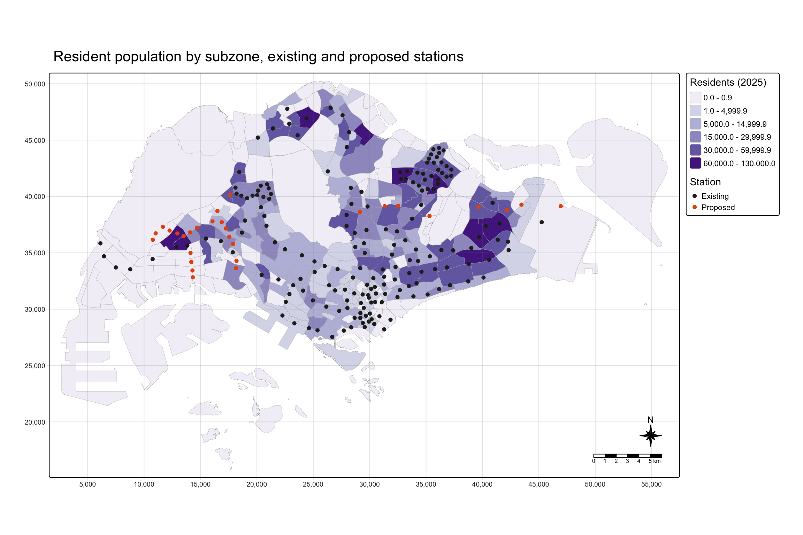
NoteInterpretation
Residents are concentrated in the HDB towns of the east, north, north-east and west. The largest subzones are Tampines East (126,370 residents), Woodlands East and Tampines West. 98 subzones have no residents at all: the Tuas and Jurong industrial estates, the airport, the central catchment and parts of the city centre.
The proposed stations (orange) fall into two groups. Most CRL stations (Pasir Ris East, Tampines North, Defu, Serangoon North, Tavistock, Teck Ghee) and the northern JRL stations (Choa Chu Kang West, Tengah, Gek Poh, Bahar Junction, Jurong West) sit in or next to populated subzones. The southern JRL branch (Tukang, Jurong Hill, Jurong Pier, Peng Kang Hill) and Aviation Park lie in industrial or airport land with few residents nearby. A residential Huff model will therefore predict low ridership there.
6.2 Observed morning ridership
ggplot(data = stations,
aes(x = ridership)) +
geom_histogram(bins = 20,
color = "black",
fill = "light blue") +
labs(x = "Weekday AM tap-ins per day", y = "Number of stations")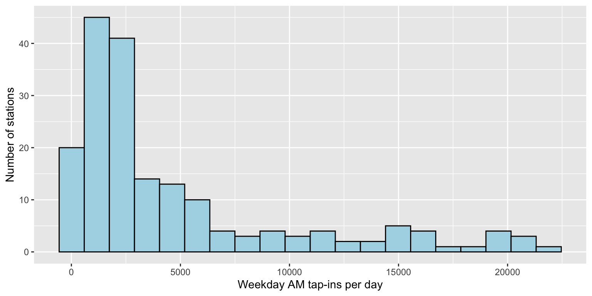
tm_shape(mpsz) +
tm_polygons(fill = "grey97", col = "grey80", lwd = 0.3) +
tm_shape(stations) +
tm_bubbles(size = "ridership",
size.legend = tm_legend(title = "Weekday AM tap-ins per day"),
fill = "#d7301f", fill_alpha = 0.7,
col = "grey30") +
tm_title("Observed weekday morning-peak (06:00-09:59) tap-ins, September 2026") +
tm_layout(frame = TRUE) +
tm_compass(type = "8star", size = 2) +
tm_scalebar() +
tm_grid(alpha = 0.2)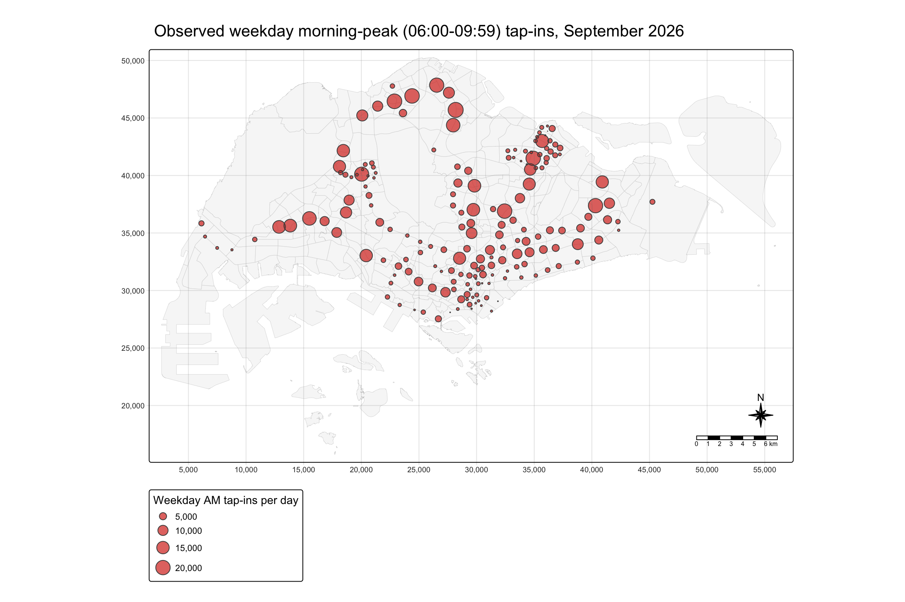
NoteInterpretation
There are about 863,700 morning tap-ins on an average weekday. The distribution is strongly right-skewed: the median station has 2,344 tap-ins, the mean is 4,694 and the busiest, Yishun, has 21,885.
The busiest stations (Yishun, Woodlands, Admiralty, Serangoon, Sengkang, Tampines) are in large HDB towns and have bus interchanges. The quietest are LRT stops such as Teck Lee (15), and new or central stations such as Keppel (59) and Gardens by the Bay (61). City-centre stations are small in the bubble map because few people live there; in the morning they receive riders rather than send them.
Morning tap-ins therefore follow where people live, which supports using residential subzones as origins.
7. Building the Spatial Interaction Data Frames
7.1 Interaction data frames: existing and future stations
As in Hands-on Exercise 8, the distance from each subzone’s point on surface to each station is computed with st_distance() and converted into a long table with pivot_longer(). The 200 m floor (Section 4.1) is applied with pmax().
origins_pt <- st_point_on_surface(origins_sf)
nodes_existing <- all_nodes %>% filter(status == "Existing")
distmat <- st_distance(origins_pt, nodes_existing)
rownames(distmat) <- origins_sf$SUBZONE_C
colnames(distmat) <- nodes_existing$stn_name
distmat_long <- distmat %>%
as.data.frame() %>%
rownames_to_column(var = "SUBZONE_C") %>%
pivot_longer(
cols = -SUBZONE_C,
names_to = "stn_name",
values_to = "distance") %>%
mutate(distance = pmax(as.numeric(distance), 200))The interaction data frame contains the origin, the destination, the attraction and the distance. As in Hands-on Exercise 8 (Store_size = 1), the starting attraction is 1 for every station; calibration replaces it in Section 8.
interaction_existing <- distmat_long %>%
left_join(nodes_existing %>%
st_drop_geometry() %>%
select(stn_name, n_lines, bus_stops, lrt, prox_cbd),
by = "stn_name") %>%
mutate(attrac = 1) %>%
relocate(distance, .after = last_col()) %>%
as.data.frame()
nrow(interaction_existing)[1] 43056head(interaction_existing) SUBZONE_C stn_name n_lines bus_stops lrt prox_cbd attrac distance
1 BMSZ12 Admiralty 1 14 0 18.196176 1 17564.764
2 BMSZ12 Aljunied 1 14 0 5.005579 1 8868.704
3 BMSZ12 Ang Mo Kio 1 10 0 9.498539 1 10630.972
4 BMSZ12 Bakau 1 14 1 12.982549 1 15760.568
5 BMSZ12 Bangkit 1 11 1 13.764566 1 11638.568
6 BMSZ12 Bartley 1 10 0 7.220778 1 10190.362The second interaction data frame adds the 29 new stations. The seven interchange stations get one more line.
nodes_future <- all_nodes %>%
mutate(n_lines = if_else(stn_name %in% upgraded$stn_name,
n_lines + 1L, n_lines))
distmat_f <- st_distance(origins_pt, nodes_future)
rownames(distmat_f) <- origins_sf$SUBZONE_C
colnames(distmat_f) <- nodes_future$stn_name
interaction_future <- distmat_f %>%
as.data.frame() %>%
rownames_to_column(var = "SUBZONE_C") %>%
pivot_longer(
cols = -SUBZONE_C,
names_to = "stn_name",
values_to = "distance") %>%
mutate(distance = pmax(as.numeric(distance), 200)) %>%
left_join(nodes_future %>%
st_drop_geometry() %>%
select(stn_name, n_lines, bus_stops, lrt, prox_cbd),
by = "stn_name") %>%
relocate(distance, .after = last_col())
c(existing = nrow(interaction_existing), future = nrow(interaction_future))existing future
43056 49842 7.2 Origins data frame (local market potential)
The market potential must be in the same unit as observed ridership, because calibration compares the two. Residents are converted to expected morning tap-ins with the network-wide morning rail trip rate.
trip_rate <- sum(stations$ridership) / sum(origins_sf$P_CNT)
trip_rate[1] 0.2070111origins_df <- origins_sf %>%
st_drop_geometry() %>%
transmute(SUBZONE_C, P_CNT,
market = P_CNT * trip_rate) %>%
as.data.frame()
head(origins_df) SUBZONE_C P_CNT market
1 BMSZ12 6570 1360.0631
2 BMSZ02 940 194.5905
3 OTSZ03 9850 2039.0596
4 OTSZ04 1180 244.2731
5 BMSZ10 12130 2511.0449
6 BMSZ04 14420 2985.1004On an average weekday morning there are about 21 rail tap-ins for every 100 residents.
7.3 Destinations data frame (observed ridership and attraction)
dest_df <- nodes_existing %>%
st_drop_geometry() %>%
select(stn_name, ridership, n_lines, bus_stops, lrt, prox_cbd) %>%
as.data.frame()
glimpse(dest_df)Rows: 184
Columns: 6
$ stn_name <chr> "Admiralty", "Aljunied", "Ang Mo Kio", "Bakau", "Bangkit", "…
$ ridership <dbl> 20384.3182, 9093.4545, 15588.2727, 1745.4545, 845.5455, 4004…
$ n_lines <int> 1, 1, 1, 1, 1, 1, 2, 1, 1, 1, 1, 1, 1, 1, 2, 1, 1, 2, 1, 1, …
$ bus_stops <int> 14, 14, 10, 14, 11, 10, 4, 3, 10, 8, 5, 9, 17, 11, 7, 7, 6, …
$ lrt <int> 0, 0, 0, 1, 1, 0, 0, 0, 0, 0, 0, 0, 0, 0, 0, 0, 0, 0, 0, 0, …
$ prox_cbd <dbl> 18.1961764, 5.0055795, 9.4985387, 12.9825495, 13.7645664, 7.…8. Calibrating the Huff Model
8.1 Reference model: the Hands-on Exercise 8 settings
The reference model uses the Hands-on Exercise 8 settings: every station has the same attraction (attrac = 1) and the default distance exponent \(\lambda = -2\).
huff_share_ref <- huff.shares(
interaction_existing, "SUBZONE_C", "stn_name",
"attrac", "distance")
huff_share_ref <- huff_share_ref %>%
left_join(origins_df %>% select(SUBZONE_C, market),
by = "SUBZONE_C")
huff_total_ref <- shares.total(
huff_share_ref, "SUBZONE_C", "stn_name",
"p_ij", "market")
ref_check <- dest_df %>%
left_join(huff_total_ref,
by = join_by(stn_name == suppliers_single))
model.fit(ref_check$ridership, ref_check$sum_E_j)$resids_sq_sum
[1] 3104643877
$pseudorsq
[1] 0.4128666
$globerr
[1] 0.6123963
$mape
[1] 2.939903model.fit() of MCI gives the sum of squared residuals, the pseudo-R², the global error and the mean absolute percentage error (MAPE).
8.2 Calibrating the distance exponent with huff.lambda()
huff.lambda() searches for the \(\lambda\) whose modelled totals are closest to the observed totals (bisection between −1 and −3). Its arguments are the three data frames from Section 7: the interaction matrix, the origins with their market potential, and the destinations with their observed ridership. The search runs huff.shares() many times and takes a few minutes, so it is run once and saved.
huff_lambda <- huff.lambda(
interaction_existing, "SUBZONE_C", "stn_name",
"attrac", "distance",
lambda_startv = -1, lambda_endv = -3,
localmarket_dataset = origins_df,
origin_id = "SUBZONE_C", localmarket = "market",
location_dataset = dest_df,
location_id = "stn_name", location_total = "ridership",
method = "bisection", iterations = 10,
output = "diag")
write_rds(huff_lambda, "data/rds/huff_lambda.rds")huff_lambda <- read_rds("data/rds/huff_lambda.rds")
huff_lambda$gamma
[1] 1
$lambda
[1] -2.341797lambda_hat <- huff_lambda$lambda8.3 Calibrating station attraction with huff.fit()
With \(\lambda\) fixed, huff.fit() adjusts each station’s attraction, one station at a time, until its modelled total is within a tolerance (5%) of its observed total. This is repeated for several iterations. The fitted attraction \(A_j^*\) measures how attractive each station is once distance and competition from other stations are taken into account. A large value means that more residents start their trips there than its location alone would suggest.
Each iteration runs huff.shares() twice for every station (368 runs), which takes about 35 minutes, so the chunk is run once and saved.
huff_fitted <- huff.fit(
interaction_existing, "SUBZONE_C", "stn_name",
"attrac", "distance",
lambda = lambda_hat,
localmarket_dataset = origins_df,
origin_id = "SUBZONE_C", localmarket = "market",
location_dataset = dest_df,
location_id = "stn_name", location_total = "ridership",
tolerance = 5, iterations = 2,
output = "matrix")
write_rds(huff_fitted, "data/rds/huff_fitted.rds")output = "matrix" returns the final interaction matrix with the fitted attraction and the probabilities computed with lambda_hat. (The "total" output of huff.fit() recomputes probabilities with the default \(\lambda = -2\) inside huff.attrac(), so the matrix output is used, and the totals are computed with shares.total().)
huff_fitted <- read_rds("data/rds/huff_fitted.rds")
attrac_fitted <- huff_fitted %>%
distinct(stn_name, attrac) %>%
rename(attrac_fit = attrac)
summary(attrac_fitted$attrac_fit) Min. 1st Qu. Median Mean 3rd Qu. Max.
0.004223 0.346956 0.748998 1.211642 1.572669 11.655124 8.4 Comparing the calibrated models
The three models are compared with model.fit(). The λ-only model uses lambda_hat with equal attraction.
huff_total_of <- function(ij, lambda) {
hs <- huff.shares(ij, "SUBZONE_C", "stn_name",
"attrac", "distance", lambda = lambda,
check_df = FALSE)
hs <- hs %>%
left_join(origins_df %>% select(SUBZONE_C, market), by = "SUBZONE_C")
shares.total(hs, "SUBZONE_C", "stn_name", "p_ij", "market",
check_df = FALSE)
}
huff_total_lambda <- huff_total_of(interaction_existing, lambda_hat)
huff_fitted_pp <- huff_fitted %>%
left_join(origins_df %>% select(SUBZONE_C, market), by = "SUBZONE_C")
huff_total_fit <- shares.total(huff_fitted_pp, "SUBZONE_C", "stn_name",
"p_ij", "market")
fit_row <- function(total, name, lambda) {
cmp <- dest_df %>%
left_join(total, by = join_by(stn_name == suppliers_single))
mf <- model.fit(cmp$ridership, cmp$sum_E_j)
tibble(model = name, lambda = lambda,
pseudo_R2 = mf$pseudorsq, MAPE = mf$mape * 100,
r = cor(cmp$ridership, cmp$sum_E_j))
}
model_table <- bind_rows(
fit_row(huff_total_ref, "M0 Hands-on 8 settings (A = 1, λ = -2)", -2),
fit_row(huff_total_lambda, "M1 huff.lambda (A = 1, λ calibrated)", lambda_hat),
fit_row(huff_total_fit, "M2 huff.fit (A and λ calibrated)", lambda_hat))
model_table %>% kable(digits = 3)| model | lambda | pseudo_R2 | MAPE | r |
|---|---|---|---|---|
| M0 Hands-on 8 settings (A = 1, λ = -2) | -2.000 | 0.413 | 293.990 | 0.643 |
| M1 huff.lambda (A = 1, λ calibrated) | -2.342 | 0.430 | 250.979 | 0.660 |
| M2 huff.fit (A and λ calibrated) | -2.342 | 0.962 | 14.627 | 0.981 |
NoteInterpretation
With the Hands-on Exercise 8 settings (M0), the model explains only 41% of the variation in station ridership, and the average station is off by almost 300%. Calibrating λ alone (M1) gives −2.34 instead of −2: if one station is twice as far as another, it is only about one-fifth as attractive (2^−2.34 ≈ 0.20). This improves the fit only a little (pseudo-R² 0.43).
Distance alone is clearly not enough. Once huff.fit() gives each station its own attraction (M2), the pseudo-R² rises to 0.96 and the MAPE falls to 15%. After two iterations, 76% of stations are within 20% of their observed ridership, and 27% are within the 5% tolerance; more iterations would improve this but each takes about 35 minutes.
The M2 fit is in-sample: the attractions are chosen to reproduce the observed totals. Whether they can be predicted for new stations is tested in Section 10.
8.5 Estimated versus observed ridership
As in Hands-on Exercise 8 (estimated versus actual store sales), ggscatterstats() compares the estimates of the reference model and of the calibrated model with the observed ridership.
stn_est <- dest_df %>%
left_join(huff_total_ref %>% select(suppliers_single, est_ref = sum_E_j),
by = join_by(stn_name == suppliers_single)) %>%
left_join(huff_total_fit %>% select(suppliers_single, est_fit = sum_E_j),
by = join_by(stn_name == suppliers_single)) %>%
left_join(attrac_fitted, by = "stn_name")p_ref <- ggscatterstats(stn_est, x = est_ref, y = ridership,
xlab = "Estimated (M0)", ylab = "Observed",
title = "M0: Hands-on 8 settings",
marginal = FALSE)
p_fit <- ggscatterstats(stn_est, x = est_fit, y = ridership,
xlab = "Estimated (M2)", ylab = "Observed",
title = "M2: calibrated with huff.fit()",
marginal = FALSE)
patchwork::wrap_plots(p_ref, p_fit, ncol = 2)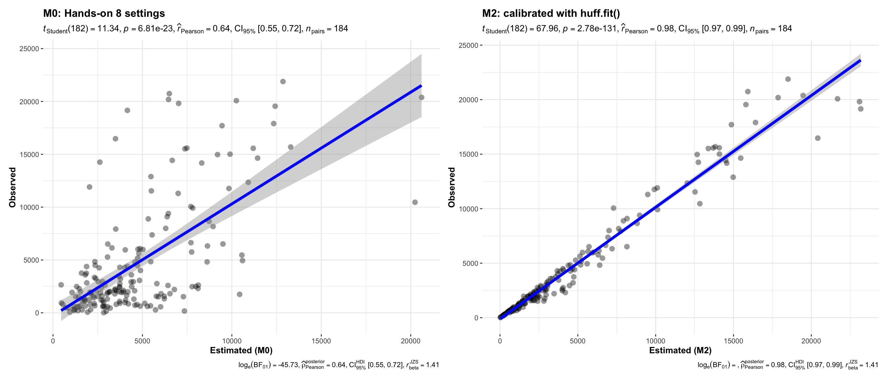
NoteInterpretation
In M0 (left), the points are widely scattered (r = 0.64). Stations far above the line have many more riders than distance alone predicts: Kranji and Tuas Link (workers and cross-border travellers), Newton (an interchange), and Punggol, Bukit Panjang, Woodlands and Serangoon, where bus interchanges bring riders from a wide area. Stations far below the line are mainly LRT stops in Punggol, Sengkang and Bukit Panjang (Teck Lee, Renjong, Sam Kee, Tongkang, Petir, Senja), plus Keppel and Gardens by the Bay. The LRT stops are close to many residents, but these residents often take the LRT or a bus to the town’s MRT hub and tap in there. Keppel (opened in 2026) and Gardens by the Bay have few residents nearby, so the reference model gives them more riders than they actually have.
In M2 (right), the points lie close to the line (r = 0.98). The fitted attraction has absorbed these station-specific differences.
9. What Makes a Station Attractive?
The fitted attraction \(A_j^*\) is known only for existing stations. To predict ridership at new stations, their attraction must be estimated from their characteristics. This section explains \(A_j^*\) with a multiple linear regression, following Hands-on Exercise 9.
9.1 The dependent variable
stn_attr <- nodes_existing %>%
select(stn_name, n_lines, bus_stops, lrt, prox_cbd) %>%
left_join(attrac_fitted, by = "stn_name") %>%
mutate(log_attrac = log(attrac_fit))h1 <- ggplot(stn_attr, aes(x = attrac_fit)) +
geom_histogram(bins = 20, color = "black", fill = "light blue") +
labs(x = "Fitted attraction")
h2 <- ggplot(stn_attr, aes(x = log_attrac)) +
geom_histogram(bins = 20, color = "black", fill = "light blue") +
labs(x = "log(fitted attraction)")
patchwork::wrap_plots(h1, h2, ncol = 2)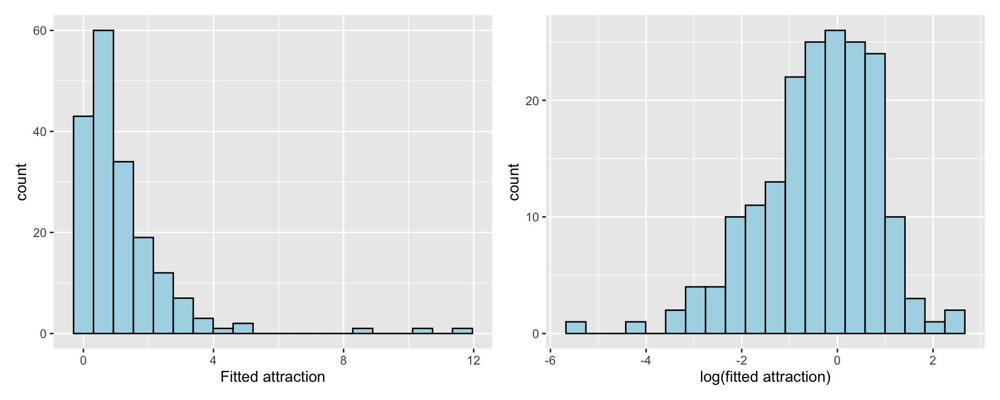
The fitted attraction is right-skewed, so its log is modelled, as LOG_SELLING_PRICE was in Hands-on Exercise 9. On the log scale, each coefficient becomes a percentage effect on attraction.
9.2 Correlation among the explanatory variables
corrplot(cor(stn_attr %>%
st_drop_geometry() %>%
select(n_lines, bus_stops, lrt, prox_cbd)),
diag = FALSE,
order = "AOE",
tl.pos = "td",
tl.cex = 0.8,
method = "number",
type = "upper")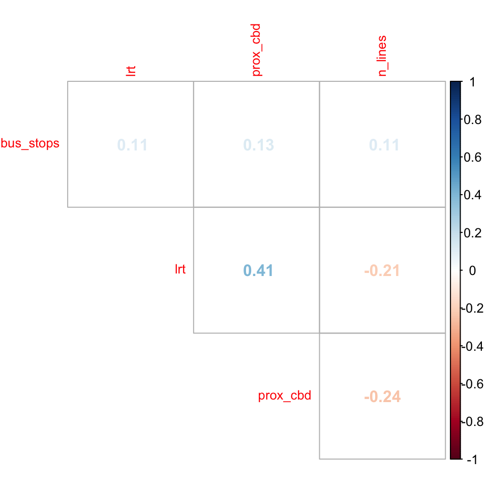
9.3 Multiple linear regression
attrac_mlr <- lm(log_attrac ~ n_lines + bus_stops + lrt + prox_cbd,
data = stn_attr)
tbl_regression(attrac_mlr, intercept = TRUE) %>%
add_glance_source_note(
label = list(sigma ~ "\U03C3"),
include = c(r.squared, adj.r.squared,
AIC, statistic,
p.value, sigma))| Characteristic | Beta | 95% CI | p-value |
|---|---|---|---|
| (Intercept) | -1.7 | -2.2, -1.2 | <0.001 |
| n_lines | 0.76 | 0.44, 1.1 | <0.001 |
| bus_stops | 0.04 | 0.01, 0.08 | 0.010 |
| lrt | -2.1 | -2.4, -1.7 | <0.001 |
| prox_cbd | 0.05 | 0.02, 0.07 | <0.001 |
| Abbreviation: CI = Confidence Interval | |||
| R² = 0.516; Adjusted R² = 0.505; AIC = 476; Statistic = 47.7; p-value = <0.001; σ = 0.865 | |||
NoteInterpretation
The four characteristics explain about half of the variation in log attraction (R² = 0.52), and all four are significant at the 5% level. Because the dependent variable is in logs, the effects are multiplicative:
- Each extra line multiplies attraction by e^0.76 ≈ 2.1 (p < 0.001). Interchanges let riders reach more places without a transfer.
- Each extra bus stop within 400 m raises attraction by about 4.5% (p = 0.01), reflecting feeder bus access.
- LRT-only stations have only e^−2.05 ≈ 13% of the attraction of an MRT station (p < 0.001). Residents near an LRT stop often take a feeder bus or the LRT to the town’s MRT hub, so they tap in at the hub.
- Each km farther from the CBD raises attraction by about 4.6% (p < 0.001). Outer-town residents rely more on rail for long trips, while residents near the centre can walk or take a bus.
The other half of the variation is station-specific and is kept in \(A_j^*\) for existing stations.
9.4 Regression diagnostics
check_collinearity(attrac_mlr)# Check for Multicollinearity
Low Correlation
Term VIF VIF 95% CI adj. VIF Tolerance Tolerance 95% CI
n_lines 1.11 [1.02, 1.52] 1.05 0.90 [0.66, 0.98]
bus_stops 1.05 [1.00, 2.15] 1.02 0.95 [0.47, 1.00]
lrt 1.23 [1.10, 1.55] 1.11 0.81 [0.64, 0.91]
prox_cbd 1.25 [1.11, 1.58] 1.12 0.80 [0.63, 0.90]plot(check_normality(attrac_mlr), type = "qq")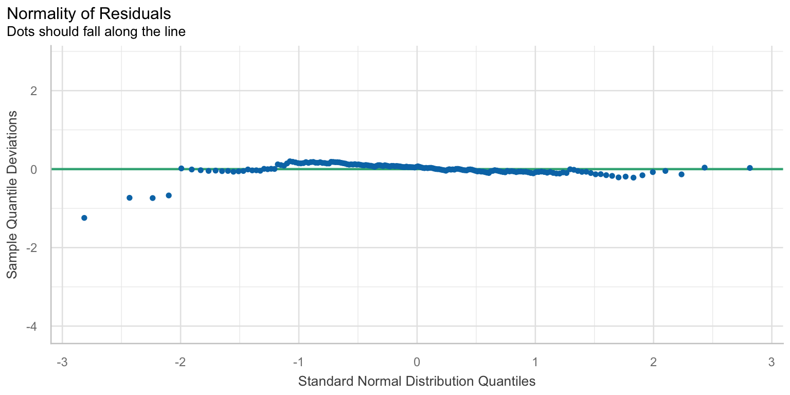
The residuals are mapped and tested for spatial autocorrelation, as in Hands-on Exercise 9. Station neighbours are defined by a 2 km distance band, so that most stations have several neighbours.
stn_attr <- stn_attr %>%
mutate(MLR_RES = residuals(attrac_mlr))
stn_attr_nb <- stn_attr %>%
mutate(nb = st_dist_band(st_geometry(geometry), upper = 2000),
wt = st_weights(nb, style = "W", allow_zero = TRUE),
.before = 1)
set.seed(1234)
global_moran_perm(stn_attr_nb$MLR_RES,
nb = stn_attr_nb$nb,
wt = stn_attr_nb$wt,
alternative = "two.sided",
nsim = 499,
zero.policy = TRUE)
Monte-Carlo simulation of Moran I
data: x
weights: listw
number of simulations + 1: 500
statistic = 0.089481, observed rank = 486, p-value = 0.056
alternative hypothesis: two.sidedtm_shape(mpsz) +
tm_polygons(fill = "grey97", col = "grey80", lwd = 0.3) +
tm_shape(stn_attr) +
tm_dots(fill = "MLR_RES",
size = 0.6,
col = "black",
fill.scale = tm_scale_intervals(
n = 6, style = "quantile",
values = "-brewer.rd_bu", midpoint = 0),
fill.legend = tm_legend(title = "Residual (log attraction)")) +
tm_title("Residuals of the attraction regression") +
tm_layout(frame = TRUE) +
tm_compass(type = "8star", size = 2) +
tm_scalebar()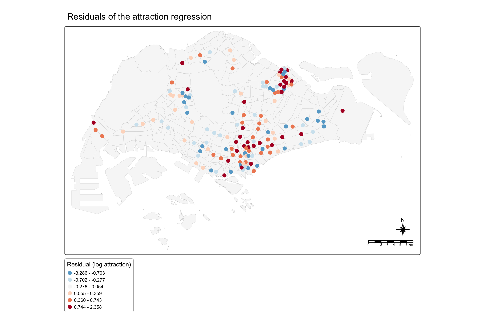
NoteInterpretation
All VIFs are below 1.3, so multicollinearity is not a problem. The Q-Q plot shows residuals close to normal, apart from a heavy left tail: four stations, two LRT stops (Teck Lee, Renjong) and two MRT stations (Keppel, Expo), are much less attractive than predicted.
Moran’s I of the residuals is 0.09 with p = 0.056. At the 5% level we cannot reject the hypothesis that the residuals are spatially random, although there is weak positive autocorrelation. The map shows some clustering: positive residuals in the city fringe and around Punggol, and negative residuals around Tampines–Pasir Ris and the Bukit Panjang LRT. With a 2 km band the station network forms 7 separate groups (for example Tuas and Changi Airport), so allow_zero = TRUE is used.
9.5 Geographically weighted regression
If station attraction depends on its characteristics differently in different parts of the island, a GWR captures this. An adaptive Gaussian kernel is used, with the bandwidth chosen by cross-validation (Hands-on Exercise 9).
bw_adaptive <- bw.gwr(
formula = log_attrac ~ n_lines + bus_stops + lrt + prox_cbd,
data = stn_attr,
approach = "CV",
kernel = "gaussian",
adaptive = TRUE,
longlat = FALSE)Adaptive bandwidth: 121 CV score: 141.6563
Adaptive bandwidth: 83 CV score: 142.0714
Adaptive bandwidth: 146 CV score: 141.9098
Adaptive bandwidth: 107 CV score: 141.6394
Adaptive bandwidth: 97 CV score: 141.7761
Adaptive bandwidth: 112 CV score: 141.6168
Adaptive bandwidth: 116 CV score: 141.6069
Adaptive bandwidth: 118 CV score: 141.6144
Adaptive bandwidth: 114 CV score: 141.6245
Adaptive bandwidth: 116 CV score: 141.6069 gwr_adaptive <- gwr.basic(
formula = log_attrac ~ n_lines + bus_stops + lrt + prox_cbd,
data = stn_attr,
bw = bw_adaptive,
kernel = "gaussian",
adaptive = TRUE,
longlat = FALSE)
gwr_adaptive ***********************************************************************
* Package GWmodel *
***********************************************************************
Program starts at: 2026-11-05 14:33:42.204758
Call:
gwr.basic(formula = log_attrac ~ n_lines + bus_stops + lrt +
prox_cbd, data = stn_attr, bw = bw_adaptive, kernel = "gaussian",
adaptive = TRUE, longlat = FALSE)
Dependent (y) variable: log_attrac
Independent variables: n_lines bus_stops lrt prox_cbd
Number of data points: 184
***********************************************************************
* Results of Global Regression *
***********************************************************************
Call:
lm(formula = formula, data = data)
Residuals:
Min 1Q Median 3Q Max
-3.2860 -0.4271 0.0550 0.5439 2.3582
Coefficients:
Estimate Std. Error t value Pr(>|t|)
(Intercept) -1.72058 0.26777 -6.425 1.15e-09 ***
n_lines 0.75911 0.15974 4.752 4.12e-06 ***
bus_stops 0.04441 0.01702 2.609 0.009840 **
lrt -2.05400 0.17466 -11.760 < 2e-16 ***
prox_cbd 0.04520 0.01240 3.644 0.000351 ***
---Significance stars
Signif. codes: 0 '***' 0.001 '**' 0.01 '*' 0.05 '.' 0.1 ' ' 1
Residual standard error: 0.8649 on 179 degrees of freedom
Multiple R-squared: 0.5161
Adjusted R-squared: 0.5053
F-statistic: 47.72 on 4 and 179 DF, p-value: < 2.2e-16
***Extra Diagnostic information
Residual sum of squares: 133.9124
Sigma(hat): 0.8577777
AIC: 475.7035
AICc: 476.178
BIC: 342.2827
***********************************************************************
* Results of Geographically Weighted Regression *
***********************************************************************
*********************Model calibration information*********************
Kernel function: gaussian
Adaptive bandwidth: 116 (number of nearest neighbours)
Regression points: the same locations as observations are used.
Distance metric: Euclidean distance metric is used.
****************Summary of GWR coefficient estimates:******************
Min. 1st Qu. Median 3rd Qu. Max.
Intercept -1.754008 -1.720461 -1.684586 -1.649717 -1.5905
n_lines 0.705191 0.742767 0.752849 0.783867 0.8027
bus_stops 0.037579 0.047934 0.052047 0.055909 0.0591
lrt -2.136097 -2.062818 -1.968528 -1.931676 -1.8185
prox_cbd 0.016269 0.025551 0.030575 0.038910 0.0519
************************Diagnostic information*************************
Number of data points: 184
Effective number of parameters (2trace(S) - trace(S'S)): 8.186773
Effective degrees of freedom (n-2trace(S) + trace(S'S)): 175.8132
AICc (GWR book, Fotheringham, et al. 2002, p. 61, eq 2.33): 474.1815
AIC (GWR book, Fotheringham, et al. 2002,GWR p. 96, eq. 4.22): 464.5691
BIC (GWR book, Fotheringham, et al. 2002,GWR p. 61, eq. 2.34): 309.3323
Residual sum of squares: 129.6455
R-square value: 0.5315013
Adjusted R-square value: 0.5095608
***********************************************************************
Program stops at: 2026-11-05 14:33:42.213498 stn_gwr <- st_as_sf(gwr_adaptive$SDF) %>%
st_transform(crs = 3414)
tm_shape(mpsz) +
tm_polygons(fill = "grey97", col = "grey80", lwd = 0.3) +
tm_shape(stn_gwr) +
tm_dots(fill = "Local_R2",
size = 0.6,
col = "black",
fill.scale = tm_scale_intervals(n = 5, style = "quantile",
values = "brewer.greens"),
fill.legend = tm_legend(title = "Local R²")) +
tm_title("GWR local R² of station attraction") +
tm_layout(frame = TRUE) +
tm_compass(type = "8star", size = 2) +
tm_scalebar()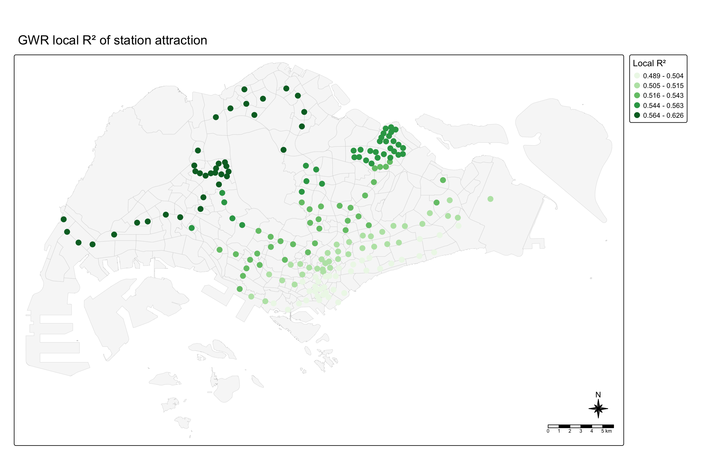
NoteInterpretation
The cross-validated adaptive bandwidth is 116 nearest stations, which is 63% of all stations. Each local regression therefore uses a large part of the network, and the coefficients vary little: the effect of an extra line ranges from 0.71 to 0.80 and the LRT effect from −2.14 to −1.82. The coefficients keep the same sign everywhere.
GWR improves the fit only slightly (R² 0.53 against 0.52; AICc 474.2 against 476.2, a difference of less than 3). The local R² is highest at the Tuas industrial stations (up to 0.63), then in the west and north, and lowest in the city centre and the east (about 0.49). Together with the weak Moran’s I, this suggests that the relationship between station characteristics and attraction is broadly the same across the island.
10. Predicting the Attraction of New Stations
10.1 Which model predicts better?
Following Hands-on Exercise 10, the existing stations are split into a training set (75%) and a test set (25%). Both the multiple linear regression and the GWR are fitted on the training set and used to predict the attraction of the test stations. Predicting unseen stations is exactly the problem posed by the new JRL and CRL stations.
set.seed(1234)
stn_split <- initial_split(stn_attr, prop = 7.5/10)
train_data <- training(stn_split)
test_data <- testing(stn_split)
mlr_train <- lm(log_attrac ~ n_lines + bus_stops + lrt + prox_cbd,
data = train_data)
mlr_pred <- predict(mlr_train, newdata = test_data)
bw_train <- bw.gwr(
formula = log_attrac ~ n_lines + bus_stops + lrt + prox_cbd,
data = train_data, approach = "CV", kernel = "gaussian",
adaptive = TRUE, longlat = FALSE)Adaptive bandwidth: 92 CV score: 117.8744
Adaptive bandwidth: 65 CV score: 118.7313
Adaptive bandwidth: 110 CV score: 117.9
Adaptive bandwidth: 82 CV score: 118.0098
Adaptive bandwidth: 99 CV score: 117.8744 gwr_pred <- gwr.predict(
formula = log_attrac ~ n_lines + bus_stops + lrt + prox_cbd,
data = train_data,
predictdata = test_data,
bw = bw_train,
kernel = "gaussian",
adaptive = TRUE,
longlat = FALSE)
pred_table <- tibble(
model = c("Multiple linear regression", "GWR"),
RMSE_log_attraction = c(rmse(test_data$log_attrac, mlr_pred),
rmse(test_data$log_attrac, gwr_pred$SDF$prediction)))
pred_table %>% kable(digits = 3)| model | RMSE_log_attraction |
|---|---|
| Multiple linear regression | 0.771 |
| GWR | 0.758 |
NoteInterpretation
On the 46 test stations, the GWR predicts log attraction slightly better than the global regression (RMSE 0.758 against 0.771). Following Hands-on Exercise 10, the model with the lower test RMSE, the GWR, is used to predict the attraction of new stations.
The difference is small. An RMSE of about 0.76 on the log scale means a typical prediction is off by a factor of about 2 (e^0.76 ≈ 2.1) in either direction. The attraction of an individual new station is therefore uncertain, and station-level forecasts in Section 11 should be read as approximate values (within a factor of about 2), not exact values.
10.2 Attraction of the future stations
The chosen model, refitted on all existing stations, gives the attraction of the 29 new stations. Existing stations keep their fitted attraction \(A_j^*\), which also captures station-specific factors the regression cannot see. For the seven stations that become interchanges, \(A_j^*\) is multiplied by the change in predicted attraction when the station gains one line, using the same GWR. This is an assumption of this study: the line effect is estimated across today’s stations, and today’s interchanges are also town hubs, so it probably overstates the gain from adding a line.
new_pts <- nodes_future %>% filter(status == "Proposed")
gwr_new <- gwr.predict(
formula = log_attrac ~ n_lines + bus_stops + lrt + prox_cbd,
data = stn_attr,
predictdata = new_pts,
bw = bw_adaptive,
kernel = "gaussian",
adaptive = TRUE,
longlat = FALSE)
new_attrac <- new_pts %>%
st_drop_geometry() %>%
select(stn_name, new_line, bus_stops, prox_cbd) %>%
mutate(log_mlr = predict(attrac_mlr, newdata = new_pts),
log_gwr = gwr_new$SDF$prediction,
attrac = exp(log_gwr))
new_attrac %>%
arrange(desc(attrac)) %>%
kable(digits = 2)| stn_name | new_line | bus_stops | prox_cbd | log_mlr | log_gwr | attrac |
|---|---|---|---|---|---|---|
| Choa Chu Kang West | Jurong Region Line | 16 | 16.26 | 0.48 | 0.47 | 1.61 |
| Bahar Junction | Jurong Region Line | 13 | 17.89 | 0.42 | 0.46 | 1.59 |
| Enterprise | Jurong Region Line | 13 | 16.79 | 0.37 | 0.41 | 1.50 |
| Gek Poh | Jurong Region Line | 10 | 18.49 | 0.32 | 0.38 | 1.46 |
| Nanyang Crescent | Jurong Region Line | 6 | 20.28 | 0.22 | 0.32 | 1.38 |
| Nanyang Gateway | Jurong Region Line | 6 | 19.90 | 0.20 | 0.30 | 1.35 |
| Pandan Reservoir | Jurong Region Line | 14 | 12.53 | 0.23 | 0.22 | 1.25 |
| Jurong West | Jurong Region Line | 7 | 17.49 | 0.14 | 0.21 | 1.23 |
| Tengah Plantation | Jurong Region Line | 10 | 15.43 | 0.18 | 0.21 | 1.23 |
| Tukang | Jurong Region Line | 8 | 16.47 | 0.14 | 0.19 | 1.21 |
| Peng Kang Hill | Jurong Region Line | 2 | 20.32 | 0.05 | 0.17 | 1.19 |
| Pasir Ris East | Cross Island Line | 12 | 15.22 | 0.26 | 0.14 | 1.15 |
| Tengah Park | Jurong Region Line | 9 | 14.83 | 0.11 | 0.14 | 1.15 |
| Serangoon North | Cross Island Line | 14 | 9.89 | 0.11 | 0.12 | 1.12 |
| Corporation | Jurong Region Line | 5 | 17.11 | 0.03 | 0.11 | 1.12 |
| Jurong Pier | Jurong Region Line | 6 | 16.02 | 0.03 | 0.08 | 1.09 |
| Toh Guan | Jurong Region Line | 9 | 13.61 | 0.05 | 0.07 | 1.07 |
| Jurong Hill | Jurong Region Line | 5 | 16.19 | -0.01 | 0.05 | 1.06 |
| Tawas | Jurong Region Line | 0 | 19.22 | -0.09 | 0.04 | 1.04 |
| Bukit Batok West | Jurong Region Line | 7 | 14.20 | -0.01 | 0.02 | 1.03 |
| Hong Kah | Jurong Region Line | 3 | 16.17 | -0.10 | -0.02 | 0.98 |
| Tavistock | Cross Island Line | 11 | 9.61 | -0.04 | -0.05 | 0.96 |
| Jurong Town Hall | Jurong Region Line | 6 | 12.72 | -0.12 | -0.10 | 0.90 |
| Tengah | Jurong Region Line | 0 | 16.29 | -0.22 | -0.13 | 0.88 |
| Aviation Park | Cross Island Line | 2 | 19.42 | 0.01 | -0.23 | 0.79 |
| Loyang | Cross Island Line | 4 | 16.55 | -0.04 | -0.23 | 0.79 |
| Teck Ghee | Cross Island Line | 6 | 9.05 | -0.29 | -0.31 | 0.73 |
| Defu | Cross Island Line | 6 | 10.14 | -0.24 | -0.32 | 0.73 |
| Tampines North | Cross Island Line | 4 | 13.50 | -0.17 | -0.33 | 0.72 |
upg_now <- nodes_existing %>%
filter(stn_name %in% upgraded$stn_name)
upg_plus <- upg_now %>%
mutate(n_lines = n_lines + 1L)
gwr_upg_now <- gwr.predict(
formula = log_attrac ~ n_lines + bus_stops + lrt + prox_cbd,
data = stn_attr, predictdata = upg_now, bw = bw_adaptive,
kernel = "gaussian", adaptive = TRUE, longlat = FALSE)
gwr_upg_plus <- gwr.predict(
formula = log_attrac ~ n_lines + bus_stops + lrt + prox_cbd,
data = stn_attr, predictdata = upg_plus, bw = bw_adaptive,
kernel = "gaussian", adaptive = TRUE, longlat = FALSE)
line_effect <- tibble(
stn_name = upg_now$stn_name,
line_mult = exp(gwr_upg_plus$SDF$prediction - gwr_upg_now$SDF$prediction))
line_effect %>% kable(digits = 2)| stn_name | line_mult |
|---|---|
| Ang Mo Kio | 2.17 |
| Boon Lay | 2.21 |
| Bright Hill | 2.19 |
| Choa Chu Kang | 2.23 |
| Hougang | 2.10 |
| Jurong East | 2.22 |
| Pasir Ris | 2.07 |
attrac_future <- bind_rows(
attrac_fitted %>%
left_join(line_effect, by = "stn_name") %>%
mutate(attrac = attrac_fit * replace_na(line_mult, 1)) %>%
select(stn_name, attrac),
new_attrac %>% select(stn_name, attrac))
interaction_future <- interaction_future %>%
left_join(attrac_future, by = "stn_name") %>%
as.data.frame()
summary(interaction_future$attrac) Min. 1st Qu. Median Mean 3rd Qu. Max.
0.004223 0.418825 0.885745 1.255041 1.526555 11.655124 11. Predicting Ridership with the New Lines
The calibrated model (\(\lambda\) = lambda_hat, fitted attractions) is applied to the future interaction data frame with huff.shares() and shares.total().
huff_share_future <- huff.shares(
interaction_future, "SUBZONE_C", "stn_name",
"attrac", "distance", lambda = lambda_hat)
huff_share_future <- huff_share_future %>%
left_join(origins_df %>% select(SUBZONE_C, market),
by = "SUBZONE_C")
huff_total_future <- shares.total(
huff_share_future, "SUBZONE_C", "stn_name",
"p_ij", "market")
forecast <- nodes_future %>%
st_drop_geometry() %>%
select(stn_name, status, new_line, ridership) %>%
left_join(huff_total_fit %>% select(suppliers_single, base = sum_E_j),
by = join_by(stn_name == suppliers_single)) %>%
left_join(huff_total_future %>% select(suppliers_single, future = sum_E_j),
by = join_by(stn_name == suppliers_single)) %>%
mutate(change = future - base,
pct_change = change / base * 100)base is the calibrated model’s estimate today (M2), which is close to the observed ridership; future is the estimate with the new stations. Comparing two outputs of the same model ensures that the change comes only from the new stations.
11.1 Ridership of the new stations
new_fc <- forecast %>%
filter(status == "Proposed") %>%
arrange(future)
ggplot(new_fc,
aes(x = future, y = fct_inorder(stn_name), fill = new_line)) +
geom_col(width = 0.7) +
scale_fill_manual(values = c("Jurong Region Line" = "#0099aa",
"Cross Island Line" = "#97c616")) +
labs(x = "Predicted weekday AM tap-ins per day", y = NULL, fill = NULL,
title = "Predicted morning ridership of the 29 new JRL and CRL stations") +
theme_minimal(base_size = 12) +
theme(legend.position = "top")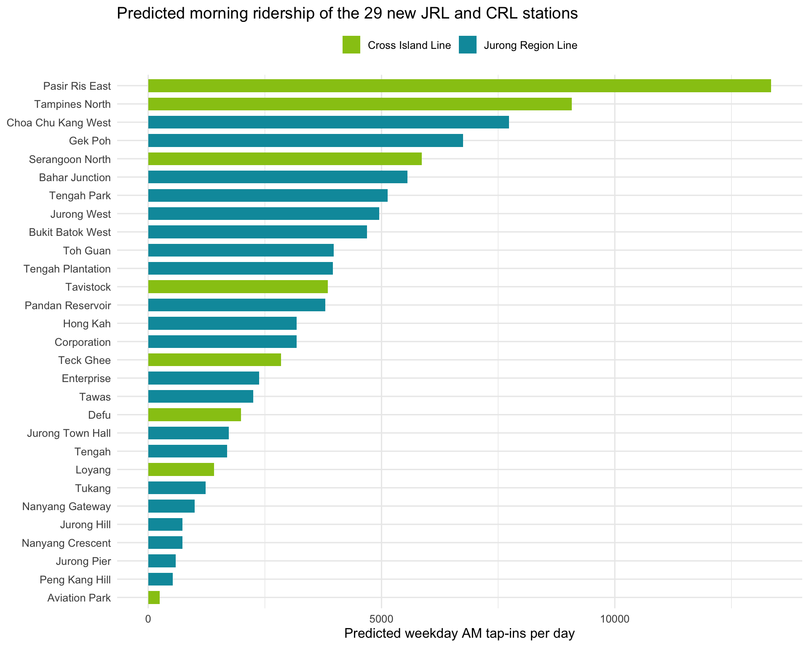
new_fc_sf <- nodes_future %>%
select(stn_name) %>%
inner_join(new_fc, by = "stn_name")
tm_shape(mpsz) +
tm_polygons(fill = "grey97", col = "grey80", lwd = 0.3) +
tm_shape(stations) +
tm_dots(size = 0.1, fill = "grey50") +
tm_shape(new_fc_sf) +
tm_bubbles(size = "future",
size.legend = tm_legend(title = "Predicted AM tap-ins per day"),
fill = "new_line",
fill.scale = tm_scale_categorical(
values = c("Jurong Region Line" = "#0099aa",
"Cross Island Line" = "#97c616")),
fill.legend = tm_legend(title = "Line"),
col = "grey20") +
tm_title("Predicted morning ridership of proposed stations") +
tm_layout(frame = TRUE) +
tm_compass(type = "8star", size = 2) +
tm_scalebar()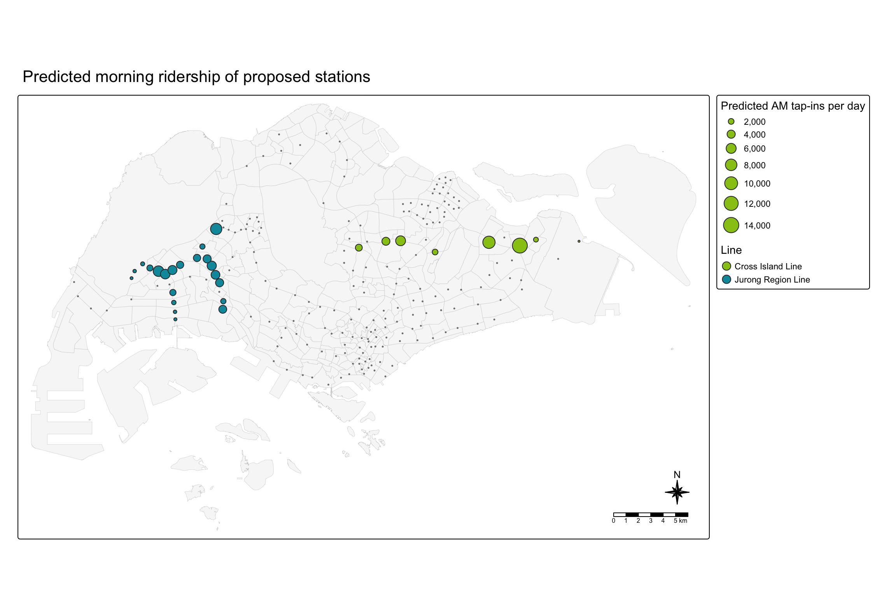
NoteInterpretation
The 29 new stations are predicted to attract about 104,400 morning tap-ins per day: 65,800 at the 21 JRL stations and 38,600 at the 8 CRL stations.
The strongest stations are those with many residents nearby and no existing station close by: Pasir Ris East (about 13,400), Tampines North (9,100), Choa Chu Kang West (7,700) and Gek Poh (6,800). Tengah Park and Tengah Plantation will grow further as Tengah town fills up, which this 2025 population does not yet show.
Six stations are at or below 1,000: Aviation Park, Peng Kang Hill, Jurong Pier, Nanyang Crescent, Jurong Hill and Nanyang Gateway (999). They serve the airport, industrial estates and NTU, whose users are workers and students rather than residents. The model is built from residents only, so these are the stations where it is least reliable and where real ridership is most likely to be higher.
11.2 Ridership of all stations
forecast %>%
mutate(group = case_when(
status == "Proposed" ~ paste("New:", new_line),
stn_name %in% upgraded$stn_name ~ "Existing: becomes interchange",
TRUE ~ "Existing: other")) %>%
group_by(group) %>%
summarise(stations = n(),
today = sum(base, na.rm = TRUE),
after = sum(future)) %>%
mutate(change = after - today) %>%
kable(digits = 0, format.args = list(big.mark = ","))| group | stations | today | after | change |
|---|---|---|---|---|
| Existing: becomes interchange | 7 | 83,927 | 90,398 | 6,471 |
| Existing: other | 177 | 779,796 | 668,935 | -110,860 |
| New: Cross Island Line | 8 | 0 | 38,637 | 38,637 |
| New: Jurong Region Line | 21 | 0 | 65,752 | 65,752 |
NoteInterpretation
Because the market is fixed (Assumption 1), the riders of the new stations come from existing stations: the 177 other existing stations lose about 110,900 tap-ins per day. The seven stations that become interchanges gain about 6,500 tap-ins overall, but not evenly (Section 12).
12. Impact on Existing Stations
12.1 Which existing stations lose or gain riders?
impact_sf <- stations %>%
select(stn_name) %>%
left_join(forecast, by = "stn_name") %>%
mutate(impact_class = cut(pct_change,
breaks = c(-Inf, -40, -20, -5, 5, Inf),
labels = c("loss > 40%", "loss 20-40%",
"loss 5-20%", "within 5%",
"gain > 5%")))
tm_shape(mpsz) +
tm_polygons(fill = "grey97", col = "grey80", lwd = 0.3) +
tm_shape(new_fc_sf) +
tm_dots(size = 0.25, shape = 24, fill = "white", col = "black") +
tm_shape(impact_sf) +
tm_dots(size = 0.6,
fill = "impact_class",
fill.scale = tm_scale_categorical(
values = c("#b2182b", "#ef8a62", "#fddbc7", "grey60", "#2166ac")),
fill.legend = tm_legend(title = "Change in AM tap-ins")) +
tm_title("Impact of JRL and CRL Phase 1 on existing stations (triangles = new stations)") +
tm_layout(frame = TRUE) +
tm_compass(type = "8star", size = 2) +
tm_scalebar()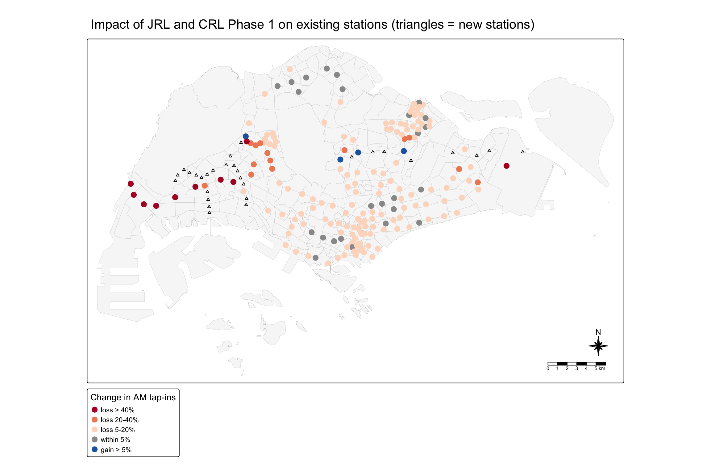
bind_rows(
forecast %>% filter(status == "Existing") %>% slice_min(pct_change, n = 20),
forecast %>% filter(status == "Existing", pct_change > 5)) %>%
arrange(change) %>%
ggplot(aes(x = change, y = fct_inorder(stn_name),
fill = change > 0)) +
geom_col(width = 0.7) +
geom_text(aes(label = paste0(round(pct_change), "%"),
hjust = if_else(change > 0, -0.15, 1.1)), size = 3.2) +
scale_fill_manual(values = c("TRUE" = "#2166ac", "FALSE" = "#b2182b"),
guide = "none") +
scale_x_continuous(expand = expansion(mult = 0.15)) +
labs(x = "Change in weekday AM tap-ins per day (label = % change)",
y = NULL,
title = "The 20 largest losses and all gains above 5% among existing stations") +
theme_minimal(base_size = 12)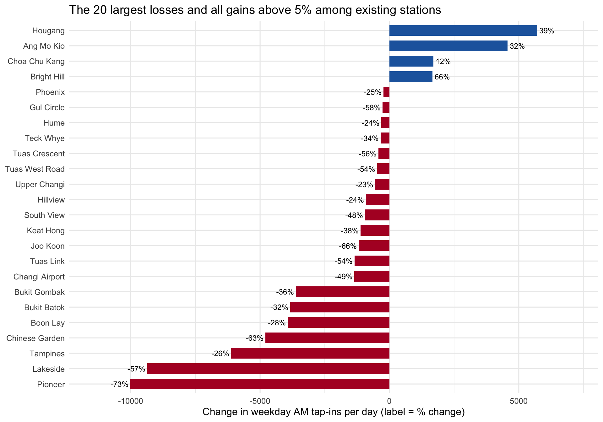
NoteInterpretation
The impact is concentrated in the west. The median existing station loses about 10% of its morning tap-ins, but in the West Region the median loss is 25%.
The largest losses are on the western East-West Line: Pioneer (−73%), Joo Koon (−66%), Chinese Garden (−63%) and Lakeside (−57%), whose residents move to Gek Poh, Bahar Junction, Jurong West, Corporation and Hong Kah. Bukit Gombak (−36%), Bukit Batok (−32%) and Boon Lay (−29%) lose residents to Tengah Park, Bukit Batok West and Jurong West. In the east, Tampines loses 27% to Tampines North.
Four interchanges gain riders: Bright Hill (+66%), Hougang (+39%), Ang Mo Kio (+32%) and Choa Chu Kang (+12%); these gains depend on the assumed line effect (Section 10.2). The Tuas stations and Changi Airport also show large percentage losses, but their riders are mainly workers and travellers, so these losses are probably overstated.
A lost tap-in is not a lost rider: many of these residents will probably still use the existing line after transferring from the JRL or CRL (the Huff model itself does not model transfers).
12.2 Market areas before and after
The market area (trade area) of a station is the set of subzones for which that station has the highest probability. As in Hands-on Exercise 8, the probabilities are turned into a wide table with pivot_wider(); base R’s max.col() then finds the station with the highest probability in each subzone.
huff_TA_of <- function(huff_share) {
huff_share_wider <- huff_share %>%
select(SUBZONE_C, stn_name, p_ij) %>%
pivot_wider(names_from = stn_name,
values_from = p_ij)
huff_share_wider %>%
mutate(TA = names(pick(-SUBZONE_C))[
max.col(pick(-SUBZONE_C), ties.method = "first")]) %>%
select(SUBZONE_C, TA)
}
TA_today <- huff_TA_of(huff_fitted)
TA_future <- huff_TA_of(huff_share_future) %>%
rename(TA_future = TA)
subzone_TA <- origins_sf %>%
left_join(TA_today, by = "SUBZONE_C") %>%
left_join(TA_future, by = "SUBZONE_C") %>%
mutate(switched = TA != TA_future)
subzone_TA %>%
st_drop_geometry() %>%
summarise(subzones_switched = sum(switched),
residents_switched = sum(P_CNT[switched]),
share_residents = residents_switched / sum(P_CNT)) %>%
kable(digits = 3, format.args = list(big.mark = ","))| subzones_switched | residents_switched | share_residents |
|---|---|---|
| 23 | 488,810 | 0.117 |
west_box <- st_bbox(c(xmin = 8500, ymin = 32500, xmax = 23000, ymax = 42500),
crs = st_crs(3414))
west_TA <- subzone_TA %>%
st_crop(west_box)
ta_levels <- sort(unique(c(west_TA$TA, west_TA$TA_future)))
ta_pal <- c(RColorBrewer::brewer.pal(12, "Paired"),
RColorBrewer::brewer.pal(8, "Dark2"),
RColorBrewer::brewer.pal(9, "Set1"),
RColorBrewer::brewer.pal(12, "Set3")) %>%
setdiff(c("#666666", "#999999", "#D9D9D9"))
ta_pal <- ta_pal[seq_along(ta_levels)]
west_TA <- west_TA %>%
mutate(TA = factor(TA, levels = ta_levels),
TA_future = factor(TA_future, levels = ta_levels))
map_TA <- function(var, title, nodes) {
tm_shape(west_TA, bbox = west_box) +
tm_polygons(fill = var,
fill.scale = tm_scale_categorical(values = ta_pal,
levels.drop = FALSE),
fill.legend = tm_legend_hide(),
col = "white") +
tm_shape(nodes %>% st_crop(west_box)) +
tm_dots(size = 0.3, fill = "black") +
tm_text("stn_name", size = 0.55, ymod = 0.7) +
tm_title(title) +
tm_layout(frame = TRUE)
}
tmap_arrange(
map_TA("TA", "Market areas today", nodes_existing),
map_TA("TA_future", "Market areas with JRL", nodes_future),
ncol = 2)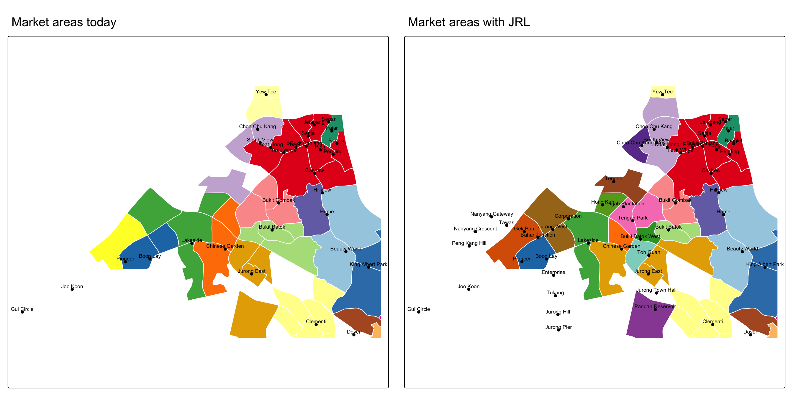
NoteInterpretation
About 11.7% of residents (about 489,000 people in 23 subzones) get a different most likely station. In the west, the large market areas of Pioneer and Lakeside split up: Yunnan (65,000 residents) moves from Pioneer to Gek Poh, and Boon Lay Place moves from Boon Lay to Jurong West. Peng Siang moves from Choa Chu Kang to Choa Chu Kang West, and Brickworks from Bukit Gombak to Tengah Park. Keat Hong and Choa Chu Kang North move to Choa Chu Kang, which becomes more attractive as a JRL interchange.
In the east, Pasir Ris Drive moves to Pasir Ris East, Tampines North to Tampines North station and Serangoon Garden to Tavistock.
Because each subzone is one polygon, a market area can only change in whole subzones. Within a large subzone, some residents will choose a different station from the one shown.
12.3 A single station’s market area: Boon Lay
As in the single-store trade area of Hands-on Exercise 8 (store BT), the patronage probability of one station is mapped before and after. Boon Lay becomes a JRL interchange, but three new JRL stations open around it.
map_station <- function(huff_share, stn, title, nodes) {
market_share <- huff_share %>%
filter(stn_name == stn) %>%
select(SUBZONE_C, p_ij)
Trade_area <- origins_sf %>%
left_join(market_share, by = "SUBZONE_C") %>%
st_crop(west_box)
tm_shape(Trade_area) +
tm_polygons(fill = "p_ij",
fill.scale = tm_scale_intervals(
breaks = c(0, 0.01, 0.05, 0.1, 0.2, 0.4, 1),
values = "brewer.blues"),
fill.legend = tm_legend(title = "Patronage Probability")) +
tm_shape(nodes %>% filter(stn_name == stn)) +
tm_dots(size = 0.5, fill = "red", col = "black") +
tm_shape(nodes %>% st_crop(west_box)) +
tm_dots(size = 0.15, fill = "black") +
tm_title(title) +
tm_layout(frame = TRUE)
}
tmap_arrange(
map_station(huff_fitted, "Boon Lay", "Boon Lay today", nodes_existing),
map_station(huff_share_future, "Boon Lay", "Boon Lay with JRL", nodes_future),
ncol = 2)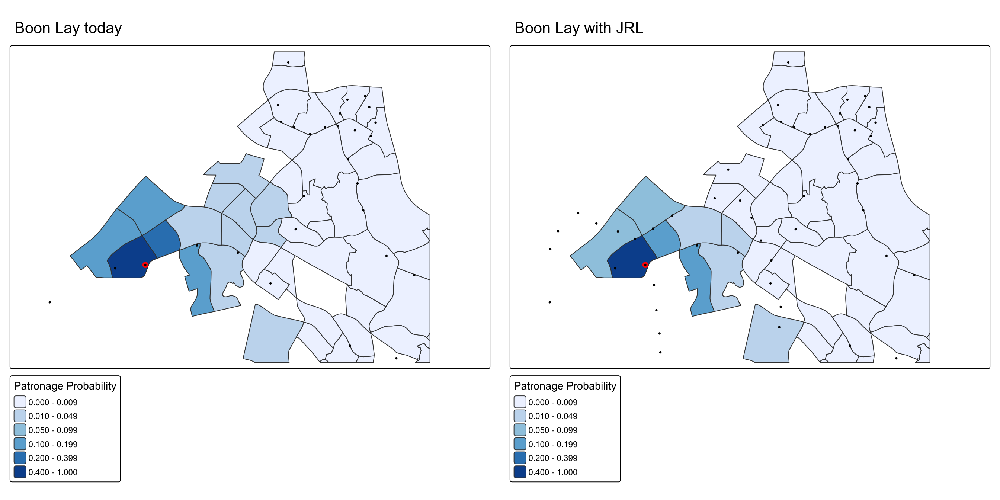
NoteInterpretation
Today, Boon Lay is the most likely station for Jurong West Central and Boon Lay Place, and it attracts 10–20% of residents from Yunnan, Taman Jurong and Wenya.
With the JRL, its probability drops in most neighbouring subzones: from 0.34 to 0.13 in Boon Lay Place, from 0.14 to 0.06 in Yunnan and from 0.59 to 0.48 in Jurong West Central. Gek Poh, Jurong West and Bahar Junction become closer choices for these residents. Its estimated morning tap-ins fall from about 13,800 to 9,900 (−28%), even though it gains a line, because many residents around Boon Lay now board at the new JRL stations; some of them will probably reach Boon Lay as transfers.
13. Value-added Analysis: Where Will the Riders Go? (MCI Model)
13.1 Question and method
The Huff model tells us where residents board. It does not say where they are going, which decides whether the JRL and CRL mainly carry local trips or long trips into the city. The second model of Lesson 8, the Multiplicative Competitive Interaction (MCI) model, is calibrated from observed shares: the share of morning trips from each origin station that ends in each destination planning area.
\[ p_{ij} = \frac{M_j^{\gamma_1}\, d_{ij}^{\gamma_2}}{\sum_k M_k^{\gamma_1}\, d_{ik}^{\gamma_2}} \]
Here \(i\) is the origin station (submarket), \(j\) the destination planning area (supplier), \(M_j\) its total morning tap-outs and \(d_{ij}\) the distance from the origin station to the nearest station in the planning area (km). mci.fit() estimates \(\gamma_1\) and \(\gamma_2\) by log-centering and ordinary least squares.
13.2 Data
stn_pa <- stations %>%
st_join(mpsz %>% select(PLN_AREA_N)) %>%
st_drop_geometry() %>%
select(stn_name, PLN_AREA_N)
am_od <- od_raw %>%
filter(DAY_TYPE == "WEEKDAY", TIME_PER_HOUR %in% 6:9) %>%
left_join(od_codes %>% select(pt_code, o = stn_name),
by = c("ORIGIN_PT_CODE" = "pt_code")) %>%
left_join(od_codes %>% select(pt_code, d = stn_name),
by = c("DESTINATION_PT_CODE" = "pt_code")) %>%
filter(o != d) %>%
group_by(o, d) %>%
summarise(flow = sum(TOTAL_TRIPS), .groups = "drop") %>%
left_join(stn_pa %>% rename(d = stn_name, d_pa = PLN_AREA_N), by = "d")
pa_mass <- am_od %>%
group_by(d_pa) %>%
summarise(mass = sum(flow))
stn_dist <- st_distance(stations)
stn_dist <- matrix(as.numeric(stn_dist), nrow(stations),
dimnames = list(stations$stn_name, stations$stn_name))MCI needs a complete matrix (every origin station × every destination planning area) with positive shares. 7296 of the 7544 station × planning-area pairs have at least one trip. The missing pairs are given half a trip, a standard way of keeping zero counts in a log model.
mci_data <- expand_grid(o = unique(am_od$o), d_pa = unique(am_od$d_pa)) %>%
left_join(am_od %>% group_by(o, d_pa) %>% summarise(flow = sum(flow), .groups = "drop"),
by = c("o", "d_pa")) %>%
mutate(flow = replace_na(flow, 0.5)) %>%
group_by(o) %>%
mutate(share = flow / sum(flow)) %>%
ungroup() %>%
left_join(pa_mass, by = "d_pa")
pa_stations <- stn_pa
mci_data$dist_km <- mapply(function(o, pa) {
s <- pa_stations$stn_name[pa_stations$PLN_AREA_N == pa]
max(min(stn_dist[o, s]) / 1000, 0.5)
}, mci_data$o, mci_data$d_pa)
mci_data <- as.data.frame(mci_data)
nrow(mci_data)[1] 7544The distance from a station to a planning area is the distance to the nearest station in that planning area, with a 0.5 km floor for the station’s own planning area.
13.3 Calibrating the MCI model
mci_model <- mci.fit(mci_data, "o", "d_pa", "share", "mass", "dist_km")
summary(mci_model)
Call:
lm(formula = mci_formula, data = mciworkfile)
Residuals:
Min 1Q Median 3Q Max
-4.5761 -0.3039 0.0383 0.3779 2.4148
Coefficients:
Estimate Std. Error t value Pr(>|t|)
mass_t 1.05052 0.01639 64.08 <2e-16 ***
dist_km_t -0.62525 0.02105 -29.70 <2e-16 ***
---
Signif. codes: 0 '***' 0.001 '**' 0.01 '*' 0.05 '.' 0.1 ' ' 1
Residual standard error: 0.6244 on 7542 degrees of freedom
Multiple R-squared: 0.4188, Adjusted R-squared: 0.4186
F-statistic: 2717 on 2 and 7542 DF, p-value: < 2.2e-16
NoteInterpretation
Both parameters are significant and have the expected signs. The share of trips going to a planning area rises almost in proportion to its size (γ₁ = 1.05: a planning area with twice as many morning tap-outs receives about twice the share). It falls with distance (γ₂ = −0.63: a planning area twice as far receives about 35% fewer trips). The model explains 42% of the variation in the log-centred shares; the rest reflects things the two variables cannot see, such as job types and direct lines between stations.
13.4 Where will riders from the new stations go?
The fitted MCI model gives, for each new station, the share of its riders going to each planning area. Multiplying by the Huff forecast (Section 11) gives expected flows. Destinations are grouped into five areas.
g_mass <- coef(mci_model)["mass_t"]
g_dist <- coef(mci_model)["dist_km_t"]
pa_area <- mpsz %>%
st_drop_geometry() %>%
distinct(PLN_AREA_N, REGION_N) %>%
mutate(dest_area = case_when(
PLN_AREA_N %in% c("DOWNTOWN CORE", "OUTRAM", "MUSEUM", "ROCHOR",
"ORCHARD", "SINGAPORE RIVER", "MARINA SOUTH",
"STRAITS VIEW") ~ "CBD",
PLN_AREA_N %in% c("JURONG EAST", "JURONG WEST", "BOON LAY",
"PIONEER") ~ "Jurong districts",
REGION_N == "CENTRAL REGION" ~ "Other Central",
REGION_N == "WEST REGION" ~ "Other West",
TRUE ~ "North / North-East / East"))
new_dist <- st_distance(new_pts, stations)
new_dist <- matrix(as.numeric(new_dist), nrow(new_pts),
dimnames = list(new_pts$stn_name, stations$stn_name))
new_flows <- expand_grid(o = new_pts$stn_name, d_pa = unique(am_od$d_pa)) %>%
left_join(pa_mass, by = "d_pa")
new_flows$dist_km <- mapply(function(o, pa) {
s <- pa_stations$stn_name[pa_stations$PLN_AREA_N == pa]
max(min(new_dist[o, s]) / 1000, 0.5)
}, new_flows$o, new_flows$d_pa)
new_flows <- new_flows %>%
mutate(u = mass^g_mass * dist_km^g_dist) %>%
group_by(o) %>%
mutate(p = u / sum(u)) %>%
ungroup() %>%
left_join(forecast %>% select(o = stn_name, new_line, future), by = "o") %>%
mutate(flow = p * future) %>%
left_join(pa_area %>% select(d_pa = PLN_AREA_N, dest_area), by = "d_pa")
fitted_flows <- mci_data %>%
mutate(u = mass^g_mass * dist_km^g_dist) %>%
group_by(o) %>%
mutate(pred_flow = u / sum(u) * sum(flow)) %>%
ungroup() %>%
left_join(pa_area %>% select(d_pa = PLN_AREA_N, dest_area), by = "d_pa")
west_existing <- c("Boon Lay", "Lakeside", "Pioneer", "Chinese Garden",
"Bukit Batok", "Choa Chu Kang")
east_existing <- c("Pasir Ris", "Tampines", "Tampines East", "Hougang",
"Kovan", "Ang Mo Kio")
dest_mix <- bind_rows(
new_flows %>% filter(new_line == "Jurong Region Line") %>%
group_by(dest_area) %>% summarise(flow = sum(flow)) %>%
mutate(group = "JRL new stations (MCI forecast)"),
fitted_flows %>% filter(o %in% west_existing) %>%
group_by(dest_area) %>% summarise(flow = sum(pred_flow)) %>%
mutate(group = "Nearby west stations today (MCI fitted)"),
fitted_flows %>% filter(o %in% west_existing) %>%
group_by(dest_area) %>% summarise(flow = sum(flow)) %>%
mutate(group = "Nearby west stations today (observed)"),
new_flows %>% filter(new_line == "Cross Island Line") %>%
group_by(dest_area) %>% summarise(flow = sum(flow)) %>%
mutate(group = "CRL new stations (MCI forecast)"),
fitted_flows %>% filter(o %in% east_existing) %>%
group_by(dest_area) %>% summarise(flow = sum(pred_flow)) %>%
mutate(group = "Nearby north-east stations today (MCI fitted)"),
fitted_flows %>% filter(o %in% east_existing) %>%
group_by(dest_area) %>% summarise(flow = sum(flow)) %>%
mutate(group = "Nearby north-east stations today (observed)")) %>%
group_by(group) %>%
mutate(share = flow / sum(flow)) %>%
ungroup() %>%
mutate(group = factor(group, levels = unique(group)),
dest_area = factor(dest_area, levels = c("CBD", "Other Central",
"Jurong districts", "Other West",
"North / North-East / East")))ggplot(dest_mix, aes(x = share, y = fct_rev(group), fill = dest_area)) +
geom_col(width = 0.65) +
geom_text(aes(label = if_else(share >= 0.05, scales::percent(share, 1), "")),
position = position_stack(vjust = 0.5), size = 3.3) +
scale_x_continuous(labels = scales::percent) +
scale_fill_manual(values = c("CBD" = "#d73027", "Other Central" = "#fc8d59",
"Jurong districts" = "#4575b4", "Other West" = "#91bfdb",
"North / North-East / East" = "#d9d9d9")) +
labs(x = "Share of weekday morning trips", y = NULL, fill = "Destination",
title = "Destinations of weekday morning trips") +
theme_minimal(base_size = 12) +
theme(legend.position = "bottom")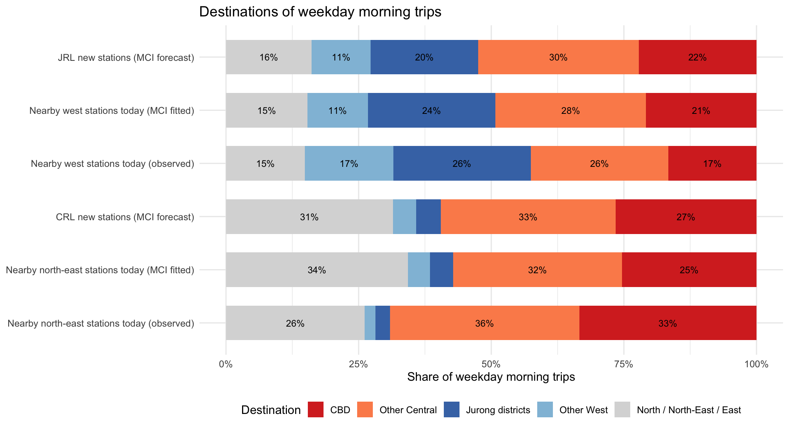
NoteInterpretation
By comparing the MCI forecast with today’s fitted and observed shares at nearby stations, we can see whether the new lines mainly carry local trips.
About 52% of JRL trips (22% CBD, 30% other central) are predicted to go to central areas, and only 31% stay in the west (Jurong districts or other West). The new JRL riders therefore mostly ride the JRL to Boon Lay, Jurong East or Choa Chu Kang, and transfer to the East-West or North-South Line. For the CRL, about 60% go to central areas.
For nearby west stations, the fitted MCI shares (21% CBD, 24% Jurong districts) are close to the observed shares (17% and 26%). For the north-east stations, the MCI under-predicts trips to the CBD (25% fitted against 33% observed), so the CRL’s central share is, if anything, understated.
14. Discussion
14.1 Integrated findings
- Calibration. Distance alone explains station ridership poorly (pseudo-R² 0.41 with the Hands-on 8 settings). With calibrated λ = −2.34 and station attractions from
huff.fit(), the Huff model reproduces observed morning tap-ins closely (pseudo-R² 0.96). - What makes a station attractive. More lines, more bus stops and distance from the CBD raise attraction; LRT-only stations have about 13% of the attraction of MRT stations. These explain about half of the variation, and the relationship is broadly the same across the island (weak Moran’s I, small GWR gain).
- New stations. The 29 new stations are predicted to attract about 104,000 morning tap-ins per day, led by Pasir Ris East, Tampines North, Choa Chu Kang West and Gek Poh. Six airport, industrial and NTU stations are at or below 1,000.
- Impact. The west loses the most: Pioneer, Chinese Garden, Lakeside and Joo Koon lose more than half of their morning tap-ins, while Bright Hill, Hougang and Ang Mo Kio gain (partly because of the assumed line effect). About 12% of residents get a new most likely station.
- Destinations. About half of JRL riders and 60% of CRL riders are predicted to travel to central areas, so both lines act largely as feeders to the existing network.
14.2 Implications for planning and public safety
- Public safety at interchanges. All seven interchanges (Boon Lay, Jurong East, Choa Chu Kang, Pasir Ris, Hougang, Ang Mo Kio and Bright Hill) will receive many more transfers; Hougang, Ang Mo Kio and Bright Hill also gain direct tap-ins, while Boon Lay, Pasir Ris and Jurong East lose them. Platform, stair and escalator capacity at these interchanges should be checked for the morning peak, with crowd-control plans for the first months of operation.
- Feeder buses. Bus services into Pioneer, Lakeside, Chinese Garden, Bukit Gombak and Tampines can be re-routed to the new stations, because the model shows their residents switching.
- Weak stations. Aviation Park, Peng Kang Hill, Jurong Pier, Nanyang Crescent, Jurong Hill and Nanyang Gateway depend on workers and students. Their opening should be coordinated with job and campus growth, to avoid repeating Buangkok’s opening problems.
- Reuse. The same workflow can be applied to later lines such as the CRL Punggol Extension and TEL Stage 5.
14.3 Limitations
- Residents only. Workers, students, tourists and cross-border travellers are not modelled. Ridership at new industrial, campus and airport stations is probably under-predicted; for existing stations of this type, the fitted attraction absorbs the error.
- Fixed market. New lines also create new trips (induced demand) and attract riders from buses. The total gain is therefore understated, and losses at existing stations overstated.
- Subzone points. Each subzone is represented by one point, so residents of large subzones are treated as living in one place. A finer origin (for example HDB blocks) would give more precise market areas.
- Straight-line distance ignores rivers, expressways and the bus network.
- One month, today’s land use. Data are from September 2026, with the 2025 population. Tengah and other new towns will grow before 2030.
- Uncertain station attraction. The attraction of new stations is predicted with a test RMSE of 0.76 (log scale), so individual station forecasts may be off by a factor of two.
- Interchange assumption. The seven new interchanges get the regression’s line effect (about ×2.1). This is not observed for these stations and probably overstates their gains.
- Calibration not fully converged.
huff.fit()was run for two iterations because each takes about 35 minutes; 76% of stations are within 20% of their observed ridership.
15. References
- Huff, D. L. (1963). A probabilistic analysis of shopping center trade areas. Land Economics, 39(1), 81–90.
- Nakanishi, M., & Cooper, L. G. (1974). Parameter estimation for a multiplicative competitive interaction model: Least squares approach. Journal of Marketing Research, 11(3), 303–311.
- Wieland, T. (2017). Market area analysis for retail and service locations with MCI. The R Journal, 9(1), 298–323.
- Zhu, Z., Zhang, A., & Zhang, Y. (2021). Improved Huff model for estimating urban rail transit station catchment areas considering station choices. Journal of Advanced Transportation, 2021, 6374724.
- Lin, T. (G.), Xia, J. (C.), Robinson, T. P., Olaru, D., Smith, B., Taplin, J., & Cao, B. (2016). Enhanced Huff model for estimating Park and Ride (PnR) catchment areas in Perth, WA. Journal of Transport Geography, 54, 336–348.
- Bahrami, M., et al. (2022). Using gravity model to make store closing decisions: A data driven approach. Expert Systems with Applications, 205, 117703.
- Land Transport Authority (2026). LTA DataMall: Passenger Volume by Origin Destination Train Stations; Train Station; Bus Stop Location.
- Singapore Department of Statistics (2025). Singapore Residents by Planning Area, Subzone, Age Group, Sex and Floor Area, June 2025.
- Kam, T. S. (2026). R for Geospatial Data Science and Analytics, Chapters 1, 2, 13, 14 and 18; ISSS626 Lesson 8.